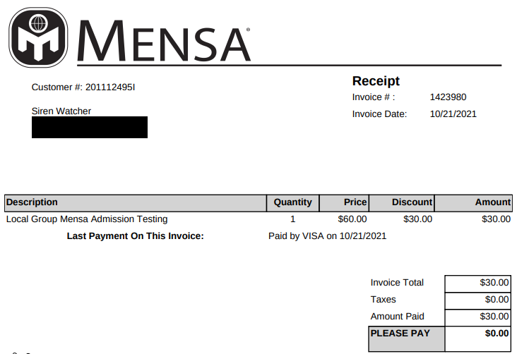

Education
Certificate
All these certificates are accredited, by either the Australian Government or an external international body. They are AQF Level 1-3 degrees, and take less than 1 year to complete.
Certificate III in Information Technology (2023)

Certificate III in Information Technology
üìú Course
üéì Certificate
üéöÔ∏è AQF Level 3
⌚ 2023
üõÇ Australian accrediation:
╰⪼ Flowchart (blue)
Description
This qualification reflects the role of individuals who are competent in a range of Information and Communications Technology (ICT) roles, including animation, basic cloud computing, basic cyber awareness, digital media skills, generalist IT support services, networking, programming, systems and web development.
Individuals who work in these fields apply broad sets of skills, including foundational knowledge in critical thinking and customer service skills, to support a range of technologies, processes, procedures, policies, people and clients in a variety of work contexts.
Outcome
The qualification/course has been designed for those who are looking to build their knowledge and skills to be successful in the ICT sector specifically targeting the web design and development area.
It will provide you with the introductory skills you need in a range of jobs within the sector, including:
- Web designer
- Web developer
- Programmer
- Software developer.
This course will start your career in the ICT sector - enhancing your key role to create web pages with consistency in appearance and user experience.
Units
Develop and extend critical and creative thinking skills
Unit Description
This unit describes skills and knowledge required to develop the habit of thinking in a more creative way through looking at things differently, musing, testing, experimenting and challenging existing thought patterns.
It applies to individuals who need to develop and extend their critical and creative thinking skills to different issues and situations and have a range of problem solving, evaluation and analysis skills.
Unit Outcomes
Performance Evidence
Evidence of the ability to:
- Ask relevant questions to challenge and enhance creative thinking.
- Use various information sources to provide answers to own questions.
- Use a range of creative thinking techniques to generate ideas or responses to questions or issues.
- Record ideas in response to a predetermined issue or situation.
Knowledge Evidence
To complete the unit requirements safely and effectively, the individual must:
- Explain why it is important to consider different perspectives when asking questions.
- List and describe different creative thinking techniques.
- Describe common blockers to creative thinking.
- Explain boundaries that need to be considered when generating ideas and responses.
- Describe ways of extending and developing individual creative thinking skills.
1 Develop a questioning mindset
1.1 Develop the habit of asking questions from different perspectives.
1.2 Take responsibility for exploring a variety of information sources to provide relevant answers to own questions.
1.3 Sort through information and ideas to identify the central questions, issues and challenges.
1.4 Challenge preconceptions and assumptions to determine actual constraints in defining a problem for resolution.
2 Generate ideas and responses
2.1 Explore and use a range of creative thinking techniques to generate ideas and responses.
2.2 Muse on, play around with and have fun with ideas in relation to a perceived objective.
2.3 Identify and challenge blockers to creative thinking.
2.4 Consider and explore realities beyond the current situation.
2.5 Evaluate, and where appropriate, challenge existing boundaries to determine perceived or actual constraints.
2.6 Show willingness to take risks with ideas and thought processes.
2.7 Look around in familiar and unfamiliar places for new inspiration and habitually record observations, experiences, ideas and reflective thoughts to broaden personal knowledge base.
2.8 Acknowledge and accept the opportunity for revelation when least expected.
2.9 Identify connections and associations from things that seem unconnected.
3 Challenge, test and re invent ideas
3.1 Identify, interrogate and challenge the assumptions behind ideas.
3.2 Experiment with variations, and explore and challenge a range of different solutions and ideas.
3.3 Consciously change perspectives, and evaluate ideas and situations in new ways.
3.4 Where appropriate, involve others in ideas and how they might change or be improved.
4 Enhance creative thinking skills
4.1 Consciously challenge and question own thought patterns and ways of responding to work and life situations.
4.2 Identify and take opportunities to self-assess and to learn about new ideas and different ways of thinking.
4.3 Take opportunities to practise and experiment with creative thinking techniques across work and life situations.
4.4 Pro-actively talk to others about ways that new ideas and patterns of thinking can be encouraged and developed.
Core
Work in a team
Unit Description
This unit describes the skills and knowledge required to work effectively as part of permanent or project based teams in a workplace within an industry. This unit applies to a wide range of workers, but has a specific focus on the teamwork skills required for workers with limited responsibility for others.
Unit Outcomes
Performance Evidence
The candidate must demonstrate the ability to complete the tasks outlined in the elements, performance criteria, and foundation skills of this unit, including on at least one occasion, evidence of the ability:
- Identify individual and team roles and responsibilities.
- Plan assigned tasks according to priorities and deadlines, and in accordance with organisational requirements.
- Contribute to achievement of team goals.
- Share knowledge, ideas and problems with team members.
- Act on feedback in a constructive manner.
- Collaborate with a remote team member on a workplace issue.
Knowledge Evidence
The candidate must be able to demonstrate knowledge to complete the tasks outlined in the elements and performance criteria of this unit. This includes knowledge of:
- Organisational requirements relevant to working in a workplace team:
- Workplace policies.
- Codes of conduct.
- Organisational reputation and culture.
- Typical compositions of workplace teams, and the roles and responsibilities of team members within organisations.
- Techniques for giving and receiving feedback in a constructive manner.
- Methods to support team members.
- Key principles of cross-cultural communication and communication with individuals with special needs or disabilities.
- Methods and tools to work with others remotely:
- Collaboration via phone or mobile.
- Collaboration via video conference.
- Collaboration via other digital tools or software.
- Issues that may impact team performance and outcomes.
- Techniques to collaborate effectively with those working remotely.
Foundation Skills
Interact with others:
- Uses appropriate communication practices when communicating with others.
- Cooperates and collaborates with team members.
Get the work done:
- Plans and implements routine tasks and workload making limited decisions on sequencing, timing and collaboration, seeking assistance in setting priorities.
- Uses digital technology to find, record or communicate information.
1 Identify individual work tasks within a team
1.1 Identify own responsibilities according to organisational policies and procedures.
1.2 Identify own role and task requirements within team.
1.3 Articulate team structure and roles of other team members.
1.4 Plan and prioritise own tasks according to given time frames and team requirements.
2 Contribute effectively to team goals
2.1 Identify team goals and own responsibilities relevant to achieving team goals.
2.2 Contribute ideas and information in team planning discussions.
2.3 Share knowledge and skills with team members to enable effective teamwork and seek or offer support as required.
3 Work effectively with team members
3.1 Communicate clearly and respectfully with team members, considering the needs of those from diverse backgrounds and roles.
3.2 Collaborate effectively with team members, including those who are working remotely on workplace issues.
3.3 Seek and provide assistance and feedback to team members where appropriate.
4 Communicate effectively with team leaders
4.1 Receive and confirm understanding of task instructions or directions.
4.2 Communicate personal commitments in a timely manner.
4.3 Identify and report any issues preventing the completion of workplace tasks, according to organisational requirements.
4.4 Seek and act upon feedback to improve personal performance and/or behaviour.
Core
Provide ICT advice to clients
Unit Description
This unit describes the skills and knowledge required to provide information and communications technology (ICT) advice and support to clients, including the communication of comprehensive technical information. It applies to frontline technical support individuals who work under a level of supervision but have responsibility for providing technical support.
Unit Outcomes
Performance Evidence
Evidence of the ability to:
- Investigate client support requests and provide a documented solution after consultation with client.
- Convey comprehensive technical information to clients in a clear, concise, jargon-free and coherent manner.
- Use technical manuals and 'help' documentation.
Knowledge Evidence
To complete the unit requirements safely and effectively, the individual must:
- Identify and describe the available in-house and vendor support.
- Explain contract and service agreements with vendors.
- Identify features of different types of hardware supported by the organisation.
- Identify sources of information relevant to the provision of services and support.
- Identify operating system:
- Functions and basic features.
- Supported by the organisation.
- Identify and describe security and network guidelines and procedures.
- Identify the advanced features of software, including the functions and support provided by the organisation.
1 Review client support issues
1.1 Check for new problems logged by client.
1.2 Check previous logs for similar problems or requests from client.
1.3 Investigate and document support issues affecting client.
1.4 Notify client of the results of investigation and provide advice and support on findings.
1.5 Obtain client feedback and make changes.
2 Provide advice on software, hardware or network
2.1 Confirm software, hardware or network requirements with client.
2.2 Investigate and document a solution.
2.3 Document additional requirements identified in the investigation and refer them to the client.
2.4 Obtain approval from client to implement the solution.
2.5 Investigate and document amount of technical support client may require.
2.6 Discuss and agree level of technical support identified with client.
2.7 Arrange time with client when support will take place.
2.8 Provide technical support as part of group or one-to-one instruction to the client.
2.9 Provide manuals and help documentation to client.
3 Obtain client feedback
3.1 Create an appropriate evaluation or feedback form or other mechanism to gather feedback about solution and support provided.
3.2 Provide client with instructions on how to complete form or use other means of providing feedback.
3.3 Distribute evaluation or feedback to client.
3.4 Review feedback from client to identify areas for improvement.
Core
Securely manage personally identifiable information and workplace information
Unit Description
This unit describes the skills and knowledge required to securely manage personally identifiable information (PII) and workplace information. It applies to those working in a broad range of industries and job roles under some supervision and guidance who manage large amounts of PII and workplace information.
Unit Outcomes
Performance Evidence
The candidate must demonstrate the ability to complete the tasks outlined in the elements, performance criteria and foundation skills of this unit, including evidence of the ability to:
- Use data protection techniques to manage workplace information for one work area over the life of a small project or work cycle.
Knowledge Evidence
Legislative requirements relating to securely managing PII and workplace information, including:
- Data protection.
- Implications of Notifiable Data Breach legislation on an organisation and other associated Australian privacy laws.
- Established international legislation.
Organisational policies and procedures relating to:
- Identifying sensitive data.
- Securely storing, sharing and managing customer information.
- Encryption, and protocols for its uses.
- Data classification.
- Media and document labelling.
- Monitoring and reporting faults and malfunctions in IT infrastructure.
Industry best practice and Australian government sources of information relating to access control, including:
- Password protection.
- Storage locations.
- Securely sharing.
- Data deletion.
Risks and benefits of cloud storage.
Risks of communicating sensitive information via non-secure means e.g. email and SMS.
Framework for distributed storage.
Technologies, techniques and protocols for storing and retrieving data.
Data protection protocols and industry-standard compliance standards relating to:
- Back-up.
- Data sharing.
- Data storage.
- Disposal of sensitive information.
- Privacy impact assessments.
1 Handle PII and workplace information responsibly
1.1 Review current standards, practices and procedures relating to workplace information.
1.2 Identify sensitive data in own workplace environment according to organisational policies and procedures and within scope of own role.
1.3 Classify workplace information types according to organisational procedures.
1.4 Apply privacy policies to all data devices that require confidentiality.
2 Store and share PII and workplace information securely
2.1 Organise obtained data sets in an easily retrievable format.
2.2 Implement required access control protocols for identified sensitive data.
2.3 Confirm that data is accurate, up-to-date, and comprehensive.
2.4 Identify and report malfunctioning infrastructure and attacks on infrastructure that pose a threat to data integrity.
3 Apply information protection protocols
3.1 Conduct back-up of on-site and off-site data according to organisational policies and procedures.
3.2 Conduct privacy impact assessments on data.
3.3 Confirm adherence to data protection compliance standards.
Core
Identify IP, ethics and privacy policies in ICT environments
Unit Description
This unit describes the skills and knowledge required to assist with the protection and lawful use of intellectual property (IP) and observing relevant organisational ethics and privacy policies.
It applies to individuals who are required to use intellectual property held by other people or organisations, to assist with the maintenance of organisational ethics and privacy policies and procedures.
Unit Outcomes
Performance Evidence
The candidate must demonstrate the ability to complete the tasks outlined in the elements, performance criteria and foundation skills of this unit, including evidence of the ability to:
- Identify at least three different types of intellectual property (IP) within the organisation.
- Identify and support the maintenance and improvement of organisational IP, ethics and privacy policy procedures on at least two occasions.
In the course of the above, the candidate must:
- Identify organisation risk assessment and identification process.
- Identify principles underpinning the maintenance and improvement of organisational IP, ethics and privacy policy procedures.
- Assist with identifying the non-compliance incidents and risks within an organisation.
Knowledge Evidence
The candidate must be able to demonstrate knowledge to complete the tasks outlined in the elements, performance criteria and foundation skills of this unit, including knowledge of:
- Key legislation related to the use of IP in the ICT industry.
- Key policies, procedures and documentation in the ICT industry, including those related to:
- Organisational IP policies and procedures.
- Codes of ethics pertinent to the ICT industry.
- Copyright.
- Privacy.
- Key organisational communication processes and procedures related to identifying IP, ethics and privacy policies in ICT environments.
1 Identify principles underpinning organisational IP, ethics and privacy policy procedures
1.1 Locate and access the organisations IP, ethics and privacy policy and procedures.
1.2 Identify own role in observing and adhering to organisation’s IP, ethics and privacy policy and procedures to avoid IP and privacy infringement.
1.3 Determine the purpose and intention of organisation’s IP, ethics and privacy policy and procedures.
1.4 Identify and understand different ethical theories and approaches.
2 Understand and apply principles underpinning organisational IP, ethics and privacy policy procedures
2.1 Identify the purpose in developing and implementing organisational IP, ethics and privacy policy procedures to prevent IP infringement.
2.2 Determine the principles applied in the organisational IP, ethics and privacy policy procedures.
3 Assist with non-compliance incident identification and recommendations
3.1 Identify organisational risk assessment and identification process.
3.2 Assist with identifying and observing internal and external non-compliance infringements of the organisations IP, ethics and privacy policy procedures.
3.3 Identify principles that could assist with overcoming non-compliance incidents with relevant personnel.
Core
Operate digital media technology packages
Unit Description
This unit describes the skills and knowledge required to identify, select and use a digital media package and supporting technologies to produce a variety of media rich documents.
It applies to individuals who work under supervision within a small to large office environment and have responsibility in completing designated tasks, using a range of practical skills and basic technical knowledge.
Unit Outcomes
Performance Evidence
The candidate must demonstrate the ability to complete the tasks outlined in the elements, performance criteria and foundation skills of this unit, including evidence of the ability to:
- Identify and define data set, incorporate data set into media technology package and present output on one occasion.
In the course of the above, the candidate must:
- Interpret basic requirements of a design brief.
- Meet organisational requirements using digital media package.
- Apply workplace health and safety (WHS) principles and responsibilities.
- Use help manuals and online support.
Knowledge Evidence
The candidate must be able to demonstrate knowledge to complete the tasks outlined in the elements, performance criteria and foundation skills of this unit, including knowledge of:
- Basic principles of visual design.
- Functions and features of digital media packages and technologies.
- Graphic design and stylistic language conventions.
- WHS principles and responsibilities.
- Principles of digital imaging and file formats, video and sound file formats, file management and transfer systems.
- Vendor product directions in digital media hardware and software.
- Creative information, scripts (text) and images.
- Basic principles of legal and regulatory requirements that apply to operating digital media technology packages.
1 Prepare to operate a digital media package
1.1 Set up workstation according to work health and safety standards and organisational requirements.
1.2 Identify requirements of design brief and user environment.
1.3 Determine required digital media package.
1.4 Determine required data set according to task requirements.
2 Operate digital media package
2.1 Manipulate and adapt data according to task requirements.
2.2 Incorporate graphics, moving images and sound according to task requirements.
2.3 Name and save document in file and folder.
3 Review digital media design
3.1 Test digital media presentation incorporated graphics, moving images and sound.
3.2 Present digital media package to required personnel.
3.3 Seek and respond to digital media package presentation feedback from required personnel.
3.4 Review final product against design brief and obtain final sign off from required personnel.
Elective
Produce digital images for the web
Unit Description
This unit describes the skills and knowledge required to produce and manipulate images for use in website development.
The unit applies to individuals working as web designers and content creators, who generate and apply digital images and create graphics for a website.
Unit Outcomes
Performance Evidence
The candidate must demonstrate the ability to complete the tasks outlined in the elements, performance criteria and foundation skills of this unit, including evidence of the ability to:
- Produce at least three different digital images for the web according to client requirements.
In the course of the above, the candidate must:
- Adhere to copyright standards and legislation.
- Save images in required format and location.
Knowledge Evidence
The candidate must be able to demonstrate knowledge to complete the tasks outlined in the elements, performance criteria and foundation skills of this unit, including knowledge of:
- Industry standards and copyright legislation applicable to using digital images.
- Digital image formats and their application.
- Industry-standard digital image editing software.
- Purposes, specific functions and key features of common digital systems and tools.
- Organisational policies and procedures, including procedures for:
- Accessing client briefs.
- Sourcing and saving digital images required web content.
1 Determine client requirements
1.1 Access and interpret requirements brief.
1.2 Determine and analyse client needs with regard to digital image content, quality and size.
1.3 Research and source required images according to organisational and copyright requirements.
1.4 Select applicable industry-standard, image-editing software.
2 Source and manipulate images
2.1 Create a range of effects using features of image-editing software.
2.2 Edit and resize images according to web application requirements.
2.3 Create backups of assets to be used.
3 Save and upload images
3.1 Save images in required formats and maintain their individual effects.
3.2 Upload images to applicable server.
3.3 Link images to required web pages.
3.4 Save images in applicable directory structure.
3.5 Check digital images meet client requirements and confirm with required personnel.
Elective
Run standard diagnostic tests
Unit Description
This unit describes the skills and knowledge required to troubleshoot problems, identify and implement preventative maintenance techniques, and conduct diagnostic tests on a range of platforms.
It applies to individuals who, while working under a level of supervision, have responsibility to action tasks in a frontline technical support capacity.
Unit Outcomes
Performance Evidence
Identify and document six ICT problems and corresponding testing and preventative maintenance techniques to provide for troubleshooting process planning.
Implement preventative maintenance techniques to address three common symptoms of problems associated with each of the following:
- Desktop application.
- Operating system.
- Laptop.
- Mobile device.
- Printer.
Identify and address three virus infections using a system diagnostic program.
Knowledge Evidence
Impact of organisational structure, diagnostic testing procedures and guidelines, and software specifications on conducting diagnostic testing.
Hardware and software diagnostic tools, including products that manage:
- Backup procedures.
- Configuration procedures.
- Hardware maintenance.
- Security.
Common symptoms of problems associated with:
- Desktop applications.
- Operating systems.
- Laptops.
- Mobile devices.
- Printers.
Preventative maintenance techniques relevant to maintaining hardware and software applications.
Common diagnostic testing approaches.
1. Identify common symptoms and preventative maintenance techniques for ICT software and hardware
1.1 Plan troubleshooting processes for ICT software and hardware to guide the resolution of common ICT problems based on requirements for ICT testing and maintenance.
1.2 Determine and document common symptoms of ICT problems for ICT software and hardware to increase troubleshooting process efficiency and focus.
1.3 Identify and select testing and preventative maintenance techniques taking into consideration the common symptoms of ICT problems to complete planning troubleshooting processes.
2. Operate system diagnostics
2.1 Run the system diagnostic program according to specifications to identify required modifications in line with requirements for ICT testing and maintenance.
2.2 Modify the system configuration as indicated by the diagnostic program to address symptoms.
2.3 Carry out preventative maintenance techniques to address common symptoms of ICT problems.
3. Monitor and remove system viruses
3.1 Scan system to check and maintain virus protection.
3.2 Report identified viruses and proposed actions to superior to gain approval.
3.3 Implement approved actions to remove detected virus infections using software tools and procedures and by restoring backups.
3.4 Document virus symptoms and removal information to keep a record of actions for future application.
Develop web presence using social media
Unit Description
This unit describes the skills and knowledge required to develop and drive social media traffic to an established website using social media platforms. It involves comparing, configuring and using different types of social networking tools and applications to increase web presence.
It applies to individuals in Information and Communications Technology (ICT) roles and use social media tools and applications in business environments.
Unit Outcomes
Performance Evidence
The candidate must demonstrate the ability to complete the tasks outlined in the elements, performance criteria and foundation skills of this unit, including evidence of the ability to:
- Develop social networking presence and upload and link at least three different file types using social media platforms, tools and applications.
In the course of the above, the candidate must:
- Evaluate use of social media tools and application and action required changes.
- Confirm security of social media interactions according to cyber security procedures and protocols.
- Seek review from required personnel.
Knowledge Evidence
The candidate must be able to demonstrate knowledge to complete the tasks outlined in the elements, performance criteria and foundation skills of this unit, including knowledge of:
- Basic technical terminology in relation to social networking, social media applications and tools.
- Basic methods of uploading images, text files, portable document format (PDF) files, audio files, video files and linking associated files.
- Features and functions of social media applications.
- Import and export software functions.
- Different types of social media tools and applications, benefits and issues associated with their use.
- Tagging process and facilitating collaborative folksonomy.
- Social media applications.
- Organisational procedures applicable to developing web presence through social media.
- Cyber security procedures and protocols.
1 Prepare to use social media tools and applications
1.1 Establish social media requirements according to business specifications.
1.2 Identify and analyse characteristics of social media platforms, tools and applications.
1.3 Identify issues associated with social media tools and applications according to organisational guidelines and policies.
1.4 Compare and discuss purpose and effect of social media platforms, tools and applications with required personnel.
1.5 Compare and review tools and features of different social media platforms, tools and applications.
2 Set up and use social media tools and applications
2.1 Identify social media tools and applications according to business specifications.
2.2 Initiate and configure preferred social media tools and applications for use.
2.3 Establish social media interface, using text and file content.
2.4 Set up accounts for required users according to organisational procedures.
2.5 Initiate social networking interaction and confirm security of collaboration.
2.6 Link social media and web presence and create content as required.
3 Review use of social media tools and application in developing web presence
3.1 Test and evaluate tools and applications according to organisational procedures.
3.2 Test and fix errors and confirm website security according to organisational procedures.
3.3 Determine whether use of social media tools is effective in developing web presence according to results.
3.4 Review social media work and apply required changes according to organisational procedures.
3.5 Confirm work performed with required personnel.
Elective
Create and style simple markup language documents
Unit Description
This unit describes the skills and knowledge required to design and create basic markup language documents and cascading style sheets (CSS) in order to define the structure and style of a website.
It applies to individuals in ICT roles who are required to create web pages with consistency in appearance and user experience.
Unit Outcomes
Performance Evidence
The candidate must demonstrate the ability to complete the tasks outlined in the elements and performance criteria of this unit; including evidence of the ability to:
Interpret and implement one set of user requirements, including the ability to:
- Select markup language according to requirements.
- Use a markup language without the automated generation of code.
- Customise website style and layout according to user requirements.
- Create consistent style and format using CSS across multiple documents on the web page.
- Identify testing approach and test cases based on user requirements.
- Develop a website style and format using cascading style sheets (CSS).
Test website in at least two common browsers and take corrective action according to test results.
Knowledge Evidence
The candidate must be able to demonstrate knowledge to complete the tasks outlined in the elements and performance criteria of this unit. This includes:
- Markup languages and their associated standards, advantages, and disadvantages.
- Standard web and CSS design principles.
- Application of the following to CSS:
- Hypertext mark-up language (HTML).
- Extensible hypertext mark-up language (XHTML).
- Standards for design.
- Hypertext transfer protocol (HTTP) and HTTP Secure (HTTPS).
- Testing tools and processes and associated advantages and disadvantages.
- Troubleshooting processes relating to CSS and websites.
- Features and limitations of common web browsers.
- Organisational procedures to document test results.
1 Review the requirements
1.1 Review user requirements to determine website design.
1.2 Develop testing approach and test cases based on requirements and refine with user.
1.3 Select appropriate markup language based on user requirements.
2 Create the document structure
2.1 Create and assign basic elements of documents based on user requirements.
2.2 Mark-up sections of documents to depict structure and refine with user.
3 Format, style and lay out the elements on a web page
3.1 Style and format documents using CSS according to user requirements.
3.2 Lay out document elements using CSS according to user requirements.
4 Test and validate the web pages
4.1 Test website in different browsers according to test approach and cases, and correct and re-test issues.
4.2 Document test results and provide to user to explain any outstanding issues and corrective actions.
4.3 Recommend, agree, and undertake any outstanding corrective actions with the user to achieve user acceptance.
Elective
Build simple web pages
Unit Description
This unit describes the skills and knowledge required to use an integrated development environment (IDE) to create, modify and test, simple web pages and web content, according to client requirements.
The unit applies to those who are responsible for creating and maintaining simple websites.
Unit Outcomes
Performance Evidence
The candidate must demonstrate the ability to complete the tasks outlined in the elements, performance criteria and foundation skills of this unit, including evidence of the ability to:
- Create a website with at least three different web pages according to client requirements using applicable features of a selected integrated development environment.
In the course of the above, the candidate must:
- Create and maintain files and upload them to required locations and servers.
- Test consistency and security of created web content.
Knowledge Evidence
The candidate must be able to demonstrate knowledge to complete the tasks outlined in the elements, performance criteria and foundation skills of this unit, including knowledge of:
- Legislative requirements applicable to developing simple web content.
- Web content accessibility guidelines including The World Wide Web Consortium (W3C).
- Web navigation functions required in supporting web content functionality, including links between pages.
- Features of web authoring tools used for web page design.
- Website publishing and markup languages.
- File transfer protocol (FTP) function.
- Common browsers used for accessing the web.
- Basic coding techniques.
- Site map creation methods.
- Website testing methodologies.
- Organisational procedures applicable to creating web pages.
1 Identify authoring and task requirements
1.1 Select preferred integrated development environment (IDE) according to client requirements.
1.2 Set preferences for IDE, including site file transfer protocol client.
2 Organise required files
2.1 Create, maintain and save files in required location or directory.
2.2 Access and use a range of features in IDE.
2.3 Confirm use of IDE with required personnel.
2.4 Maintain directory structure for site.
2.5 Upload files to required folder using file transfer protocol (FTP).
3 Add content and simple navigation to web pages
3.1 Insert and format text content according to client requirements.
3.2 Insert images, data tables and simple forms.
3.3 Access markup language and make basic modifications to code.
3.4 Create sitemap and plan navigation.
3.5 Seek feedback on work performed from required personnel and amend accordingly.
3.6 Create links between pages using text and images.
4 Test and finalise web pages
4.1 Test elements of website content across multiple browsers and browser versions.
4.2 Confirm web page meets client and web content accessibility guidelines.
4.3 Evaluate test results and confirm website meets client requirements.
Elective
Evaluate characteristics of cloud computing solutions and services
Unit Description
This unit describes the skills and knowledge required to undertake a basic review and analysis of cloud computing delivery and deployment models to support the needs of a business. The unit applies to individuals engaged in the basic review of a cloud computing solutions for a business or enterprise.
Unit Outcomes
Performance Evidence
The candidate must demonstrate the ability to complete the tasks outlined in the elements, performance criteria and foundation skills of this unit, and to:
- Determine at least one suitable cloud computing solution and associated services according to business needs.
In the course of the above, the candidate must:
- Collate information on the business' need for cloud technology.
- Articulate total cost of ownership for cloud computing solution as it applies to business needs.
- Document finalised evaluation findings.
Knowledge Evidence
The candidate must demonstrate knowledge to complete the tasks outlined in the elements, performance criteria and foundation skills of this unit. This includes knowledge of:
- Technology trends in cloud computing.
- Industry technology standards used in cloud computing solutions and services.
- Functions and features of cloud computing solutions and services vendor products.
- Principles and functions of cloud computing solutions, models and technologies, including:
- Infrastructure as a Service (IaaS).
- Platforms as a Service (PaaS).
- Software as a Service (SaaS).
- Industry standard hardware and software products, their general features, capabilities and application.
- Different cost models and cloud economic theories as they apply to different cloud services, and benefits to each.
- Uses and different features of private, hybrid and public cloud deployment models.
1 Prepare to review cloud technology solutions and services
1.1 Identify data handling organisational policies and procedures required for cloud computing solutions and services.
1.2 Identify cloud computing solutions and services according to organisational needs.
1.3 Identify and confirm business and industry technology terminology, characteristics and concepts.
1.4 Identify organisational roles affected by implementation of cloud services and solutions and their impact on cloud computing solutions and services.
1.5 Identify requirements to transferring to cloud computing solutions and services according to organisational policies and procedures.
2 Review cloud delivery and deployment models
2.1 Identify and review capability and characteristics of different cloud service platforms and delivery models against business requirements.
2.2 Research and identify emerging cloud deployment models.
2.3 Discuss differences, advantages and disadvantages between cloud cost models and different hybrid deployment models.
2.4 Identify the most suitable cloud service and delivery platform according to organisational needs.
3 Finalise evaluation
3.1 Identify and document benefits of adopting best cloud solutions and services according to business needs.
3.2 Identify and document challenges of adopting cloud solutions and services according to business needs.
3.3 Finalise cloud solutions and services evaluation and seek and respond to evaluation feedback according to organisational policies and procedures.
3.4 Communicate outcomes of evaluation to required personnel.
3.5 Save and lodge evaluation document to required personnel.
Core
Apply introductory programming techniques
Unit Description
This unit describes the skills and knowledge required to create simple applications through introductory programming techniques.
It applies to those who have responsibility for creating applications and includes applying language syntax, control structures to create code, using programming standards, testing and debugging.
Unit Outcomes
Performance Evidence
The candidate must demonstrate the ability to complete the tasks outlined in the elements, performance criteria and foundation skills of this unit, including evidence of the ability to:
- Design and build one simple application according to programming standards and program specifications.
In the course of the above, the candidate must:
- Apply programming language syntax, sequence, selection and iteration constructs.
- Document changes and tests performed.
- Review code according to feedback obtained during design and development of application.
Knowledge Evidence
The candidate must be able to demonstrate knowledge to complete the tasks outlined in the elements, performance criteria and foundation skills of this unit, including knowledge of:
- Language data types, operators, expressions and variables.
- Basic language syntax rules.
- Sequence, selection and iteration constructs.
- The development of small-sized applications.
- Industry programming standards and guidelines.
- Commenting techniques.
- Debugging techniques.
- Application testing methods.
- Basic data structures.
1 Establish application task
1.1 Clarify task with required personnel.
1.2 Identify design specifications, programming standards and guidelines according to task requirements.
2 Apply language syntax and layout
2.1 Apply basic language syntax rules.
2.2 Create code using language data types, operators and expressions.
2.3 Apply variables and variable scope.
2.4 Use program library functions.
2.5 Clarify meaning of code using commenting techniques.
3 Apply control structures
3.1 Apply language syntax in sequence, selection and iteration constructs.
3.2 Create expressions in selection and iteration constructs using logical operators.
4 Code using standard programming algorithms
4.1 Develop algorithms using sequence, selection and iteration constructs.
4.2 Create and use data structures.
4.3 Code standard sequential access algorithms used in reading and writing text files.
4.4 Apply string manipulation.
5 Test code
5.1 Examine variable contents and use debugging techniques to detect and correct errors.
5.2 Create and conduct simple tests and confirm code meets design specification.
5.3 Document actions carried out and results of tests performed.
6 Create a simple application and seek feedback
6.1 Design an algorithm in response to basic program specifications.
6.2 Develop application to meet program specification.
6.3 Confirm application meets initial specifications.
6.4 Present application to required personnel.
6.5 Obtain feedback and sign off from required personnel.
Core
Certificate IV in Information Technology (2023)
Certificate IV in Information Technology
üìú Course
üèõÔ∏è TAFE NSW
üéì Certificate
üéöÔ∏è AQF Level 4
⌚ 2023
üõÇ Australian accrediation:
╰⪼ Flowchart (green)
Description
This qualification reflects the role of individuals who are job ready and competent in a wide range of information and communications technology (ICT) roles and apply a broad range of skills in varied work contexts, using problem solving skills and effective communication with others.
Outcome
The skills required for these roles may include, but are not restricted to:
Web development: designing website layouts through textual and visual content transfer, search engine optimisation and simple markup language documents.
Units
Apply advanced critical thinking to work processes
Unit Description
This unit describes the skills and knowledge required to use advanced-level critical thinking skills in a professional context. This includes using methods of analysis, synthesis and evaluation.
This unit applies to individuals who evaluate processes, products and services that may be proposed or already existing. This unit applies to individuals who are typically responsible for developing work processes, products and services that may be proposed or already existing.
Unit Outcomes
Performance Evidence
Evidence of the ability to:
- Explain critical thinking concepts and approaches, the value of applying such approaches, and how they may apply to a workplace context.
- Use a range of critical thinking techniques to identify and address limitations in workplace processes, products or services.
- Ask questions of self and others to broaden own knowledge and understanding.
- Use various information sources to provide answers to own questions.
- Develop a proposal to articulate to a broad range of workplace stakeholders a solution to an identified issue.
- Incorporate feedback and self-reflection to critically assess performance.
Knowledge Evidence
The candidate must be able to demonstrate the following knowledge to effectively complete the tasks outlined in the elements and performance criteria of this unit, and to manage tasks and reasonably foreseeable contingencies in the context of the work role:
- Key features and characteristics of critical thinking concepts and approaches.
- Key features and limitations of workplace procedures.
- Key legislative requirements relating to workplace procedures.
- Key sources of reliable information relevant to workplace procedures.
1 Understand critical thinking in a workplace context
1.1 Identify key characteristics of concepts in a critical thinking protocol or process.
1.2 Explore situations in which critical thinking concepts may be applied in the workplace.
1.3 Reflect on benefits of adopting a critical thinking mindset and risks associated with failing to do so.
2 Apply a systematic approach to decision making
2.1 Analyse and understand key elements of workplace processes, products or services.
2.2 Identify limitations in existing or proposed workplace processes, products or services by applying critical thinking protocols or processes.
2.3 Source information from a variety of different and verified sources.
2.4 Compare and contrast alternative critical thinking concepts in a workplace decision making process.
2.5 Apply a decision making framework to reach a defensible conclusion in a workplace context in accordance with organisational policies and procedure.
2.6 Articulate and justify decision making process.
3 Develop critical thinking mindset
3.1 Conduct review of effectiveness of decision making, including critical self-reflection.
3.2 Seek meaningful feedback from organisational management.
3.3 Identify areas for self-development.
3.4 Develop plan for future process evaluations.
Core
Identify and evaluate emerging technologies and practices
Unit Description
This unit describes the skills and knowledge required to identify emerging technologies and practices in the ICT sector and evaluate their potential impact on organisational practices.
It applies to individuals who work across a wide range of information technology (IT) areas, including technical support, network administration, web technologies, software applications and digital media technologies.
Unit Outcomes
Performance Evidence
The candidate must demonstrate the ability to complete the tasks outlined in the elements and performance criteria of this unit; including evidence of the ability to:
- Describe and evaluate purpose, features, attributes and potential applications of:
- Three emerging technologies.
- Three emerging practices in the ICT sector.
- Develop a strategy to respond to each of the three emerging technologies and three emerging practices, including:
- Potential organisational opportunities and threats resulting from the emerging technology and practice.
- Likely impact on current organisational technologies and practices.
- Objectives of the organisation in responding to the emerging technology or practice.
- Changes required in order to achieve intended objectives of the organisation.
- Considerations for how to implement the changes required.
Knowledge Evidence
The candidate must be able to demonstrate knowledge to complete the tasks outlined in the elements and performance criteria of this unit. This includes:
- Research approaches for emerging technologies and practices in the ICT sector and their potential impact on current technologies and practices.
- Technology implementation planning methods.
- Organisational technologies and practices.
1 Identify emerging technologies and practices in IT
1.1 Access sources of information on emerging technologies and practices in the IT industry.
1.2 Identify and document emerging technologies and practices relevant to organisational context.
2 Evaluate the impact of emerging technologies and practices
2.1 Evaluate features and functions of emerging technologies and practices to determine advantages and disadvantages relevant to organisational context.
2.2 Assess and document potential impacts of emerging technologies and practices on current organisational technologies and practices.
2.3 Seek and obtain feedback from organisational representative on assessment of impact of emerging technologies and practices and incorporate feedback into report.
3 Develop strategies to prepare for emerging technologies and practices
3.1 Develop and document strategies to prepare organisation for impacts of emerging technology and practices.
3.2 Identify and document changes to organisational technologies and practices required based on strategies to determine organisational response.
3.3 Seek and obtain feedback from organisational representative on strategy and organisational response from organisation and incorporate feedback into strategy and organisational response.
Core
Identify and resolve client ICT problems
Unit Description
This qualification reflects the role of individuals who are job ready and competent in a wide range of information and communications technology (ICT) roles and apply a broad range of skills in varied work contexts, using problem solving skills and effective communication with others.
Unit Outcomes
Performance Evidence
The candidate must demonstrate the ability to complete the tasks outlined in the elements, performance criteria and foundation skills of this unit, including evidence of the ability to:
- Identify, record, prioritise and resolve a client ICT problem on at least two separate occasions.
In the course of the above, the candidate must:
- Record and prioritise client support activities.
- Determine required resources for maintenance activities.
- Prioritise client ICT problems, using an impact analysis of the problem.
- Complete maintenance activities.
- Resolve client problems and escalate according to organisational guidelines and practices.
- Refer problems to third parties where required.
- Prepare, finalise and distribute maintenance report, including information about problems and resolution action.
- Provide advice to the client and seek and record client feedback.
- Store and dispose used components.
Knowledge Evidence
The candidate must be able to demonstrate knowledge to complete the tasks outlined in the elements, performance criteria and foundation skills of this unit, including knowledge of:
- Hardware and software products:
- In use.
- Supported by the organisation.
- Organisational procedures, including:
- Problem prioritisation.
- Third party support and documentation.
- Maintenance procedures.
- Maintenance report preparation and distribution.
- Sustainable practices consistent with ICT industry.
- Environmental guidelines that may apply to identifying and resolving client ICT problems.
- Help desk or service desk structure and escalation procedures.
- Key functions and basic features of operating system.
- Organisational structure of workplace that may be relevant to identifying and resolving client ICT problems.
- Workplace security and network guidelines and procedures.
1 Prepare to resolve client ICT problems
1.1 Determine client problems and impact of problem according to organisational procedures.
1.2 Document client response according to organisational policies and procedures.
1.3 Examine logged requests and determine requirements.
1.4 Confirm additional information with client and respond to new information according to organisational procedures.
1.5 Refer to database of known problems and identify resolution options.
1.6 Establish and record required constraints.
2 Prioritise client ICT problems
2.1 Undertake impact analysis of problem and determine severity and risks.
2.2 Prioritise problem according to organisational procedures.
2.3 Provide problem resolution advice and support to client.
3 Refer problems where required
3.1 Investigate and refer problems to third parties according to organisational procedures.
3.2 Provide third party with client and problem details as required.
3.3 Document advice and support provided by third party according to organisational procedures.
4 Carry out maintenance
4.1 Obtain required components for resolution according to organisational procedures.
4.2 Complete maintenance according to organisational procedures.
4.3 Store and dispose of used components according to organisational environmental guidelines.
5 Create maintenance report
5.1 Prepare maintenance report according to organisational procedures.
5.2 Finalise maintenance report and acquire internal sign off.
5.3 Distribute maintenance report to client and seek and respond to client feedback as required.
6 Confirm problem resolution
6.1 Obtain and respond to client feedback.
6.2 Confirm client requirements have been met.
6.3 Resolve outstanding client requirements and escalate as required.
6.4 Forward client feedback to required personnel for sign-off and record in problems database.
Core
Apply introductory programming techniques
Unit Description
This unit describes the skills and knowledge required to create simple applications through introductory programming techniques.
It applies to those who have responsibility for creating applications and includes applying language syntax, control structures to create code, using programming standards, testing and debugging.
Unit Outcomes
Performance Evidence
The candidate must demonstrate the ability to complete the tasks outlined in the elements, performance criteria and foundation skills of this unit, including evidence of the ability to:
- Design and build one simple application according to programming standards and program specifications.
In the course of the above, the candidate must:
- Apply programming language syntax, sequence, selection and iteration constructs.
- Document changes and tests performed.
- Review code according to feedback obtained during design and development of application.
Knowledge Evidence
The candidate must be able to demonstrate knowledge to complete the tasks outlined in the elements, performance criteria and foundation skills of this unit, including knowledge of:
- Language data types, operators, expressions and variables.
- Basic language syntax rules.
- Sequence, selection and iteration constructs.
- The development of small-sized applications.
- Industry programming standards and guidelines.
- Commenting techniques.
- Debugging techniques.
- Application testing methods.
- Basic data structures.
1 Establish application task
1.1 Clarify task with required personnel.
1.2 Identify design specifications, programming standards and guidelines according to task requirements.
2 Apply language syntax and layout
2.1 Apply basic language syntax rules.
2.2 Create code using language data types, operators and expressions.
2.3 Apply variables and variable scope.
2.4 Use program library functions.
2.5 Clarify meaning of code using commenting techniques.
3 Apply control structures
3.1 Apply language syntax in sequence, selection and iteration constructs.
3.2 Create expressions in selection and iteration constructs using logical operators.
4 Code using standard programming algorithms
4.1 Develop algorithms using sequence, selection and iteration constructs.
4.2 Create and use data structures.
4.3 Code standard sequential access algorithms used in reading and writing text files.
4.4 Apply string manipulation.
5 Test code
5.1 Examine variable contents and use debugging techniques to detect and correct errors.
5.2 Create and conduct simple tests and confirm code meets design specification.
5.3 Document actions carried out and results of tests performed.
6 Create a simple application and seek feedback
6.1 Design an algorithm in response to basic program specifications.
6.2 Develop application to meet program specification.
6.3 Confirm application meets initial specifications.
6.4 Present application to required personnel.
6.5 Obtain feedback and sign off from required personnel.
Core
Create and style simple markup language documents
Unit Description
This unit describes the skills and knowledge required to design and create basic markup language documents and cascading style sheets (CSS) in order to define the structure and style of a website.
It applies to individuals in ICT roles who are required to create web pages with consistency in appearance and user experience.
Unit Outcomes
Performance Evidence
The candidate must demonstrate the ability to complete the tasks outlined in the elements and performance criteria of this unit; including evidence of the ability to:
- Interpret and implement one set of user requirements, including the ability to:
- Select markup language according to requirements.
- Use a markup language without the automated generation of code.
- Customise website style and layout according to user requirements.
- Create consistent style and format using CSS across multiple documents on the web page.
- Identify testing approach and test cases based on user requirements.
- Develop a website style and format using cascading style sheets (CSS).
- Test website in at least two common browsers and take corrective action according to test results.
Knowledge Evidence
The candidate must be able to demonstrate knowledge to complete the tasks outlined in the elements and performance criteria of this unit. This includes:
- Markup languages and their associated standards, advantages, and disadvantages.
- Standard web and CSS design principles.
- Application of the following to CSS:
- Hypertext mark-up language (HTML).
- Extensible hypertext mark-up language (XHTML).
- Standards for design.
- Hypertext transfer protocol (HTTP) and HTTP Secure (HTTPS).
- Testing tools and processes and associated advantages and disadvantages.
- Troubleshooting processes relating to CSS and websites.
- Features and limitations of common web browsers.
- Organisational procedures to document test results.
1 Review the requirements
1.1 Review user requirements to determine website design.
1.2 Develop testing approach and test cases based on requirements and refine with user.
1.3 Select appropriate markup language based on user requirements.
2 Create the document structure
2.1 Create and assign basic elements of documents based on user requirements.
2.2 Mark-up sections of documents to depict structure and refine with user.
3 Format, style and lay out the elements on a web page
3.1 Style and format documents using CSS according to user requirements.
3.2 Lay out document elements using CSS according to user requirements.
4 Test and validate the web pages
4.1 Test website in different browsers according to test approach and cases, and correct and re-test issues.
4.2 Document test results and provide to user to explain any outstanding issues and corrective actions.
4.3 Recommend, agree, and undertake any outstanding corrective actions with the user to achieve user acceptance.
Elective
Create a markup language document
Unit Description
This unit describes the skills and knowledge required to use a text editor to design, create and save web pages to a given specification.
The unit applies to individuals working as web designers and developers, who generate a framework for internet information using a markup language according to client briefs.
Unit Outcomes
Performance Evidence
The candidate must demonstrate the ability to complete the tasks outlined in the elements, performance criteria and foundation skills of this unit, including evidence of the ability to:
- Design, create and save a document using a markup language using a text editor.
In the course of the above, the candidate must:
- Define document structure incorporate elements as required.
- Generate markup language document compatible with multiple web browsers and devices.
- Confirm document requirements are met and records all outcomes.
- Validate markup document against standards set by the World Wide Web Consortium (W3C).
- Obtain sign-off.
Knowledge Evidence
The candidate must be able to demonstrate knowledge to complete the tasks outlined in the elements, performance criteria and foundation skills of this unit, including knowledge of:
- The use of markup languages including:
- Hypertext markup language (HTML).
- Virtual reality modelling language (VRML).
- Extensible markup language (XML).
- Standards set by the World Wide Web Consortium (W3C) applicable to markup language.
- The range of available web browsers and their accessibility.
- Issues applicable to accessibility.
- Documentation techniques, web page components and organisational procedures and guidelines relevant to creating a markup language document to specification.
- Document validation procedures.
- Browser and device compatibility.
1 Analyse specifications and requirements
1.1 Identify uses and audience of required document.
1.2 Determine required mark-up language according to document's uses and audience.
1.3 Identify and confirm required documentation according to organisational procedures.
1.4 Define document structure according to organisational procedures and document requirements.
2 Create document structure
2.1 Create and assign basic elements of document considering accessibility and document requirements.
2.2 Markup and define sections of document and describe structure and layout according to document requirements.
2.3 Confirm styling of web page meets document specifications and requirements.
3 Incorporate web page components
3.1 Identify and evaluate web page components required according to document requirements3.2 Incorporate required web page components into document according to organisational procedures and guidelines.
4 Validate documents
4.1 Validate markup language document against specifications and record outcomes.
4.2 Validate compatibility of markup language document in different browsers and devices and record outcomes.
4.3 Identify gaps between specifications and requirements and markup language document and apply changes as required, according to organisational procedures.
4.4 Confirm requirements are met and finalise documentation according to organisational procedures.
4.5 Obtain sign-off from required personnel.
Elective
Create responsive website layouts
Unit Description
This unit describes the skills and knowledge required to scope web page requirements and to create and implement designs according to client requirements. Clients in this instance refers to internal and external individuals.
The unit applies to individuals working as web designers and web developers, who apply a wide range of knowledge and skills in basic web development for internal and external clients.
Unit Outcomes
Performance Evidence
The candidate must demonstrate the ability to complete the tasks outlined in the elements, performance criteria and foundation skills of this unit, including evidence of the ability to:
- Design a web page according to client design specifications.
In the course of the above, the candidate must:
- Lay out page elements and style accordingly.
- Test web pages on at least two browsers and at least two devices
- Obtain client sign-off.
Knowledge Evidence
The candidate must be able to demonstrate knowledge to complete the tasks outlined in the elements, performance criteria and foundation skills of this unit, including knowledge of:
- Standard web design principles.
- Principles and components used in website development:
- Cascading style sheets (CSS).
- Hypertext transfer protocol (HTTP).
- A markup language, including hypertext markup language (HTML).
- Web libraries.
- Web frameworks.
- Web design and development standards, including:
- Organisational standards.
- World Wide Web Consortium (W3C) standards.
- Web Content Accessibility Guidelines (WCAG).
- Cyber security procedures and protocols.
1 Identify main layout sections from design specification
1.1 Identify website scope, functionality and design specifications according to business requirements.
1.2 Consult with clients and confirm required sections of web page.
1.3 Create web page structure according to organisational procedures.
2 Layout web page according to design specification
2.1 Select and position document elements.
2.2 Style web page elements according to design specifications.
3 Test and validate layout
3.1 Test website in multiple browsers and devices.
3.2 Debug website and confirm website is secure according to cyber security procedures and protocols.
3.3 Validate web pages against applicable web design industry standards.
3.4 Obtain client feedback and amend layout as required.
3.5 Seek confirmation with required personnel and obtain client sign-off.
Elective
Confirm accessibility of websites
Unit Description
This unit describes the skills and knowledge required to confirm accessibility of websites for users with auditory, visual, mobility and cognitive impairments.
The unit applies to web developers and designers who are required to adhere to international and Australian industry standards and practices to ensure that users with accessibility requirements are not disadvantaged when using websites.
Unit Outcomes
Performance Evidence
The candidate must demonstrate the ability to complete the tasks outlined in the elements, performance criteria and foundation skills of this unit, including evidence of the ability to:
- Confirm a website is accessible for people with special needs and adheres to general and specific accessibility standards and requirements.
In the course of the above, the candidate must:
- Identify wider context of accessibility through research of accessibility standards.
- Creates an accessibility checklist which incorporates accessibility standards and requirements.
- Test accessibility of pages and website using a range of tools and tests.
- Apply and document required changes according to testing results.
- Obtain sign-off from required personnel.
Knowledge Evidence
The candidate must be able to demonstrate knowledge to complete the tasks outlined in the elements, performance criteria and foundation skills of this unit, including knowledge of:
- Legislation, regulations and codes of practice, applicable to access, equity and security.
- Computing and programming standards applicable to access and equity.
- Technical performance measurement principles.
- Automatic testing tools and software.
- Required programming language.
- Web Accessibility Initiative (WAI).
- World Wide Web Consortium (W3C), Web Content Accessibility Guidelines (WCAG) and other Australian accessibility standards.
1 Identify accessibility standards
1.1 Research and identify, specific user groups with particular accessibility requirements.
1.2 Identify general legislated and industry accessibility standards and requirements.
1.3 Identify web development standards.
1.4 Consolidate specific and general standards and requirements, into an accessibility checklist.
2 Test accessibility of pages and website
2.1 Select and run automatic testing tools and software.
2.2 Check text equivalent for every non-text element is present in website where feasible.
2.3 Confirm text-only pages are logical and accessible.
2.4 Demonstrate document can be read without style sheets.
2.5 Check and confirm information and pages are not dependent on colour and can operate in monochrome environment.
2.6 Verify pages operate on text-to-speech browser.
2.7 Test site with different user groups and confirm site transforms and maintains accessibility.
3 Apply and document changes and obtain sign off from required personnel
3.1 Apply and document required changes to pages and website according to testing results.
3.2 Check and confirm priorities identified in analysis of web development standards are met and completed.
3.3 Confirm website is compliant with accessibility checklist requirements.
3.4 Confirm accessibility of website is signed off by required personnel.
Elective
Evaluate and select a web hosting service
Unit Description
This unit describes the skills and knowledge required to determine a client's current and future internet service providers (ISPs) needs.
The unit applies to individuals working in Information and Communications Technology (ICT) who take responsibility for comparing and evaluating internet service provider (ISP) services.
Unit Outcomes
Performance Evidence
The candidate must demonstrate the ability to complete the tasks outlined in the elements, performance criteria and foundation skills of this unit, including evidence of the ability to:
- Evaluate and select a web hosting service according to business and user needs.
In the course of the above, the candidate must:
- Assess client and business needs and establish selection criteria.
- Identify and evaluate a range of web hosting services.
- Confirm business and client budgetary, security and technical requirements are met.
- Test and benchmark web hosting service with client benchmarks.
- Obtain sign-off from required personnel.
Knowledge Evidence
The candidate must be able to demonstrate knowledge to complete the tasks outlined in the elements, performance criteria and foundation skills of this unit, including knowledge of:
- Different web hosting service provision options.
- Web hosting service characteristics including:
- Support service standards.
- Data capacity.
- Security technologies and procedures.
- Scripting languages.
- Performance monitoring systems.
- Escalation procedures.
- Back up procedures.
- Payment procedures.
- Email and mailing list services.
- A range of hosting services and their characteristics including support service standards, data capacity and availability of security technologies and server-side languages.
- Industry standard development software, applications, extensions and databases.
- Internet security issues.
- Operating systems used by ISPs.
- Server technologies.
- Documentation techniques used to evaluate and select a web hosting service.
- Web hosting services and performance benchmarks.
- ISP performance testing methodologies.
- Organisational procedures applicable to selecting a web hosting service.
1 Identify requirements and select ISP
1.1 Discuss and confirm web hosting service requirements and establish client selection criteria according to business and user needs.
1.2 Review client usage and confirm email services are compliant with business needs.
1.3 Review characteristics of different hosting services and assess compatibility with business needs.
1.4 Evaluate optional server applications for advanced web business functions.
1.5 Select ISP hosting service according to client selection criteria and business needs.
2 Confirm web host meets technical requirements
2.1 Confirm web-hosting service has server performance and availability monitoring systems in place.
2.2 Discuss and confirm escalation procedures and performance standards with ISP.
2.3 Establish security, backup and payment procedures and technologies according to business and customer expectations and requirements.
2.4 Confirm operating system supports preferred business development software, applications, extensions and databases.
2.5 Check and confirm web-host servers support dynamic websites on various browsers, devices and preferred business technologies.
2.6 Confirm site-analysis reports are available, flexible and meet business needs.
3 Benchmark performance and test against specified criteria
3.1 Test performance of web hosting service during on and off-peak times and document outcomes according to organisational procedures.
3.2 Confirm email and mailing services have backup procedures in place and are protected from damage, erasure and unwanted damage.
3.3 Confirm support services perform according to business needs.
3.4 Discuss and confirm performance of selected ISP against specified criteria and make required changes.
3.5 Obtain sign-off from required personnel.
Elective
Transfer content to websites
Unit Description
This unit describes the skills and knowledge required to transfer content, from a remote location to a web server, using a range of commercial information and communications technology (ICT) products. The objective of this skill is the upload of new and revised information on a website.
The unit applies to individuals who work as web developers and designers and required to update websites.
Unit Outcomes
Performance Evidence
The candidate must demonstrate the ability to complete the tasks outlined in the elements, performance criteria and foundation skills of this unit, including evidence of the ability to:
- Transfer at least three files to a remote server using file transfer protocol (FTP) client, according to organisational security and privacy policies and guidelines.
In the course of the above, the candidate must:
- Select and configure a file transfer protocol (FTP) client.
- Test configuration of FTP client.
- Plan and prepare content to be transferred including file format, receiving directory structure, account logins and security issues.
- Connect to server using applicable account login.
- Follow security procedures according to cyber security protocols.
- Transfer content to remove server.
- Store and maintain files in required location.
Knowledge Evidence
The candidate must be able to demonstrate knowledge to complete the tasks outlined in the elements, performance criteria and foundation skills of this unit, including knowledge of:
- The FTP server and client software.
- Cyber security and internet protocols.
- Content features and functions.
- Security issues applicable to transferring content.
- Server access security procedures and connection methods.
- Website server architecture and operating systems.
- Data backup and file transfer methodology.
- Organisational security and privacy policies and guidelines.
1 Select and configure file transfer protocol client
1.1 Identify content requiring transfer to website.
1.2 Review and select file transfer protocol (FTP) client according to features and functions of content and technical environment.
1.3 Enter client details, including user identity (ID), password and host name or ID, into profile fields to create a permanent profile.
1.4 Choose settings including auto-detect, save profile and password, depending on organisational security and privacy policies and guidelines.
1.5 Test and verify, configuration by connecting to web-hosting server.
2 Plan and prepare for data transfer and establish server connection
2.1 Prepare data content and back it up on local device and server.
2.2 Identify data as compressed, or uncompressed, with tools available on server.
2.3 Confirm files are in required form and receiving directory structure is applicable.
2.4 Log on to remote server using administrative, guest or anonymous accounts.
2.5 Proceed through security layers according to organisational guidelines and cyber security protocols.
2.6 Initiate file transfer protocol client program and locate destination directory.
3 Transfer data to remote server
3.1 Select files to be transferred and choose mode, American Standard Code for Information Interchange (ASCII), or binary.
3.2 Download files and run antivirus software and confirm files are secure according to cyber security protocols.
3.3 Move, rename, copy and delete files on server as required and as permissions allow.
3.4 Store and order files according to file extensions and task requirements.
3.5 Translate, decompress and de-archive downloaded files.
3.6 Confirm data transfer, content functionality and close connection.
Elective
Produce basic client-side script
Unit Description
This unit describes the skills and knowledge required to develop interactive and engaging websites, using a range of features from various languages.
The unit applies to individuals working in web development environments who are required to produce client-side scripts as a common means of creating interactive websites. These scripts offer an effective simple means of enabling websites to provide greater interaction with clients.
Unit Outcomes
Performance Evidence
The candidate must demonstrate the ability to complete the tasks outlined in the elements, performance criteria and foundation skills of this unit, including evidence of the ability to:
- Design and produce a script according to web document functionality requirements and organisational procedures.
In the course of the above, the candidate must:
- Produce dynamic web page documents, considering accessibility of web page.
- Test and debug web document functionality and confirm web document is secure.
- Document and seek approval from required personnel.
Knowledge Evidence
The candidate must be able to demonstrate knowledge to complete the tasks outlined in the elements, performance criteria and foundation skills of this unit, including knowledge of:
- Basic principles behind open platform programming.
- Client-side scripting and its application to dynamic web page design, including:
- Events and event handlers.
- Internet operation related to clients.
- Internet protocols.
- Simple hypertext markup language (HTML).
- Applicable standards.
- Purpose and differences between server-side and client-side scripting.
- Standards associated with programming documentation.
- Script testing methodologies.
- Cyber security procedures and protocols.
- Organisational procedures relevant to producing client-side scripts.
1 Analyse web document requirements
1.1 Determine dynamic functionality of web document.
1.2 Identify required language according to required functionality.
1.3 Engage in client discussions and determine web document requirements.
1.4 Confirm level of documentation required.
2 Design and produce web documents
2.1 Design web document and embedded scripts and confirm required functionality is achieved according to organisational procedures.
2.2 Write a simple hypertext markup language (HTML), considering accessibility.
2.3 Write and produce embedded scripts according to web document requirements.
3 Test and debug scripts
3.1 Test web document against required functionality and reiterate accordingly.
3.2 Test script using cyber security procedures and protocols and confirm script is secure and bug free.
3.3 Complete documentation and submit to required personnel for approval.
Elective
Implement content management systems
Unit Description
This unit describes the skills and knowledge required to create and integrate a website into an open-source content management system.
The unit applies to individuals working as web developers, who apply a wide range of knowledge and skills across ICT, to support small to medium enterprises (SMEs) requiring broader rather than more specialised, ICT support.
Unit Outcomes
Performance Evidence
The candidate must demonstrate the ability to complete the tasks outlined in the elements, performance criteria and foundation skills of this unit, including evidence of the ability to:
- Create a content management system (CMS) powered website using an open-source solution.
In the course of the above, the candidate must:
- Validate CMS against standards set by the World Wide Web Consortium (W3C).
- Test compatibility of website on at least two different browsers and at least two different digital devices.
- Confirm website is cyber safe.
- Obtain sign off from required personnel.
Knowledge Evidence
The candidate must be able to demonstrate knowledge to complete the tasks outlined in the elements, performance criteria and foundation skills of this unit, including knowledge of:
- Content management systems and additions and plugins requirements.
- Website content structure and navigation.
- Licensing and hosting structures.
- Programming languages.
- Markup languages and associated standards.
- Server-side language and security techniques.
- Web content accessibility guidelines, including World Wide Web Consortium (W3C) standards and their application to website development.
- Content management system (front and backend) in commonly used browsers.
- Cyber security procedures and protocols.
1 Analyse specifications and requirements
1.1 Identify required functionality of website.
1.2 Determine server-side language required in website production.
1.3 Establish content structure and navigation of website.
1.4 Identify pre-existing restraints and standards requiring consideration when developing a website solution.
2 Research solutions and create a content management system powered website
2.1 Research solutions according to website requirements, including programming language, content management system (CMS), licensing structure and hosting structure.
2.2 Select content management system according to research conducted and website requirements.
2.3 Fulfil website requirements using plug-ins and additions to existing content management system.
2.4 Install and configure chosen CMS and required plugins.
2.5 Insert and manage, website content.
2.6 Back up CMS as required.
3 Validate and evaluate final website
3.1 Validate final website markup against website standards.
3.2 Test content management system performance in different browsers and digital devices, checking compatibility and core content management system functionality.
3.3 Confirm final website is secure and bug free according to cyber security procedures and protocols.
3.4 Confirm website requirements have been met and obtain sign off from required personnel.
Elective
Design website layouts
Unit Description
This unit describes the skills and knowledge required to design a website to client specifications, within a particular technical and human interface environment.
The unit applies to those who are responsible for the analysis, documentation and design of the human computer interface, including requirements that drive design for either internal or external clients.
Unit Outcomes
Performance Evidence
The candidate must demonstrate the ability to complete the tasks outlined in the elements, performance criteria and foundation skills of this unit, including evidence of the ability to:
- Design a website layout using applicable tools and procedures according to client requirements.
In the course of the above, the candidate must:
- Identify website and design structure required by conducting a user analysis.
- Define user interface, user experience and site hierarchy test and amend website layout design document work including documentation of design structure, process notes, tests and solutions.
Knowledge Evidence
The candidate must be able to demonstrate knowledge to complete the tasks outlined in the elements, performance criteria and foundation skills of this unit, including knowledge of:
- Copyright and intellectual property requirements applicable to designing web layouts.
- Customer and business liaison that is applicable to designing website layouts.
- Internet connectivity impacts.
- Page load times measurement tools.
- Technical specifications documentation procedures.
- Standards applicable to website design.
- Website design methods and standard website structures.
- Design and cyber security procedures and protocols.
- Media queries relevant to designing website layouts documentation techniques applicable documenting website layout designs.
- Performance budget applications relevant to designing website layouts.
1 Define and gather business environment
1.1 Establish client requirements from brief.
1.2 Identify applicable standards and design principles required in website development.
1.3 Identify hardware and software requirements.
2 Define human user interface and user experience and determine site hierarchy
2.1 Conduct user analysis and determine user profile and needs.
2.2 Identify user content, operating system and requirements.
2.3 Determine applicable design principles for website.
2.4 Determine user experience design requirements according to user needs.
2.5 Design and create page hierarchy and structure according to design protocol.
2.6 Review content and confirm user content requirements are met.
3 Integrate and finalise design components
3.1 Apply required information hierarchy to site design.
3.2 Design and implement process flow according to client requirements.
3.3 Test website layout against user needs and amend as required.
3.4 Complete and document design structure.
Elective
Implement search engine optimisations
Unit Description
This unit describes the skills and knowledge required to implement industry standard internet-marketing practices using search engine optimisation (SEO) techniques, including introducing web pages to search engines and monitoring search engine performance.
The unit applies to individuals who make recommendations and monitor keyword enhancements, search engine marketing (SEM) and social network marketing (SNM).
Unit Outcomes
Performance Evidence
The candidate must demonstrate the ability to complete the tasks outlined in the elements, performance criteria and foundation skills of this unit, including evidence of the ability to:
- Conduct analysis and review two existing websites and create optimisation plans for each, according to business requirements.
In the course of the above, the candidate must:
- Analyse website performance.
- Make recommendations according to analysis performed.
- Prepare and implement, an internet search engine marketing strategy according to website analysis and business requirements.
- Monitor search engine performance and compare these with previous results.
Knowledge Evidence
The candidate must be able to demonstrate knowledge to complete the tasks outlined in the elements, performance criteria and foundation skills of this unit, including knowledge of:
- Internet marketing methods and practices including:
- Search terms.
- Keywords.
- Keyword density.
- Search engine ranking.
- Search engine methods of assessing search engine optimisation (SEO).
- Back links.
- Social network media in the context of SEO.
- How search engines work.
- Recommendations in optimising the following:
- Image search optimisation (ISO).
- Keyword density on web pages.
- Keywords used in headings and heading levels meta-elements and page tiles.
- Surveys.
- Focus groups.
- Social media listening platforms.
- Statistical analysis.
- Research professionals.
1 Analyse internet-marketing requirements
1.1 Define overall SEO goals and target audiences and set objectives in accordance with business requirements.
1.2 Record and analyse traffic to site using online tools, reports and web-hosting statistics.
1.3 Create a keyword suggestion list through keyword research and compile and categorise keywords using online tools, considering macro and sub-keywords.
1.4 Identify and discuss gaps, opportunities and areas of potential optimisation, through page and website position analysis and create recommendations accordingly.
2 Prepare an internet marketing strategy report
2.1 Prepare a client recommendation report, covering differences between search engine optimisation, search engine marketing and social network marketing using detail from analysis.
2.2 Make recommendations about search engines and social network media, based on volume of users.
2.3 Develop action plan and timeframe, including goals, recommendations, priorities, schedules, allocation of roles and responsibility.
2.4 Explain search terms to required personnel.
2.5 Make recommendations on implementation of search engine optimisation, search engine marketing and search engine ranking improvement methods.
3 Implement and review SEO strategy
3.1 Implement keywords, content sections and short tail and long tail keywords on pages.
3.2 Implement the sections for content, and back links from quality websites.
3.3 Create online profiles for updating search engine data.
3.4 Introduce website to major search engines.
3.5 Measure SEO performance, including website position.
3.6 Evaluate traffic analysis reports and compare these with previous results.
3.7 Summarise findings and make further recommendations.
Elective
Apply structured query language in relational databases
Unit Description
This unit describes the skills and knowledge required to produce structured query language (SQL) statements to work with server-side scripts, enabling web developers to interact with web server databases.
The unit applies to individuals in a range of roles who are responsible for creating server-side interaction with dynamic web pages, using SQL as a means of communicating with databases.
Unit Outcomes
Performance Evidence
The candidate must demonstrate the ability to complete the tasks outlined in the elements, performance criteria and foundation skills of this unit, including evidence of the ability to:
- Apply structured query language (SQL) to a relational database and gather required information according to task requirements.
In the course of the above, the candidate must:
- Generate queries for one or more tables and provide required data.
- Add, modify, retrieve and delete records from database tables as required test and verify SQL statements.
Knowledge Evidence
The candidate must be able to demonstrate knowledge to complete the tasks outlined in the elements, performance criteria and foundation skills of this unit, including knowledge of:
- Organisational policies and procedures relating to SQL application including:
- Identifying SQL requirements from job specifications.
- Testing and verifying SQL results.
- Features and application of primary and foreign keys in database tables, aggregate functions and clause functions required in SQL application.
- Principles of "combining and/or condition" in SQL statements and Boolean operators.
- IN and BETWEEN conditional operators.
- Mathematical operators.
- Table joins (relationships).
- Documentation techniques relevant to applying structured query language in relational databases.
- SQL statement testing methodologies.
1 Identify database requirements
1.1 Determine information required from database.
1.2 Identify tables holding this information.
1.3 Identify primary keys in these tables.
1.4 Identify relationships between these tables including foreign keys.
2 Build and implement SQL in relational databases
2.1 Identify and build SQL statements according to task requirements.
2.2 Create tables in a database using SQL statements.
2.3 Create primary and foreign keys required in database table.
2.4 Manipulate data in a database using SQL statements.
2.5 Query database using SQL statements.
2.6 Retrieve information from database using written SQL statements.
3 Test and verify SQL results
3.1 Construct test data and test SQL statements according to organisational procedures.
3.2 Determine expected results of SQL statements.
3.3 Verify result of constructed SQL statements against expected results and document findings.
3.4 Confirm task requirements are met and obtain sign-off from required personnel.
Elective
Produce server-side script for dynamic web pages
Unit Description
This unit describes the skills and knowledge required to produce server-side scripts for dynamic web pages using a range of relevant features from different languages.
It applies to individuals working as web designers who apply a wide range of knowledge and skills across different information and communications technology (ICT) environments to support organisations that require broad ICT support.
Unit Outcomes
Performance Evidence
- Create a dynamic web page according to one set of user requirements.
- Use server-side scripting to retrieve information from a web-hosted database in two different instances.
- Analyse three language options and the associated advantages and disadvantages based on web document requirements to select most appropriate language.
- Configure one webserver to deliver the website using HTTPS.
- Create one script for each of the following:
- Inserting, updating, and deleting data from a web server database.
- Implementing security features.
- Uploading and retrieving images.
- Managing sessions and creating secure logins.
- Test web document and undertake corrective actions to meet requirements.
Knowledge Evidence
- Server-side technologies and at least three web scripting languages and associated advantages and disadvantages.
- Server-side web analysis and design parameters.
- XHTML standards.
- Testing tools and processes and associated advantages and disadvantages.
- Control structures and object-oriented programming.
- Web-programming concepts including:
- The hypertext transfer protocol (HTTP) and HTTP Secure (HTTPS).
- Stateless programming.
- Session management.
- Authentication and web security.
- Database vulnerabilities and preventative software configuration and programming practices.
- Organisational procedures to document test results.
1 Analyse the requirements for web documents requiring server-side dynamic interaction
1.1 Review and assess user requirements with user to determine the necessary web document.
1.2 Determine and document dynamic functionality of web document to meet user requirements.
1.3 Determine appropriate language based on required dynamic functionality.
1.4 Finalise web document requirements.
2 Design server-side scripts
2.1 Design web document and server-side code to interact with an external data source.
2.2 Design web document and server-side code to allow administrator to insert, update, and delete entries to external data source.
2.3 Implement security features in web document based on user requirements.
3 Produce the web documents
3.1 Write extensible hypertext markup language (XHTML) in line with XHTML standards, to define web page structure.
3.2 Write server-side scripts in line with XHTML standards to enable customised page content generation.
3.3 Upload images to web-hosted database to enable dynamic retrieval for web page.
4 Test the scripts and debug
4.1 Test web document and rectify issues to meet user requirements.
4.2 Complete test results documentation and submit it to superior for discussion and acceptance.
5 Set up security
5.1 Determine and implement permissions to prevent error messages displaying to the public.
5.2 Configure server software to minimise potential database attacks.
Elective
Contribute to cyber security risk management
Unit Description
This unit describes the skills and knowledge required to contribute to cyber security risk management, which includes assisting in developing and managing associated risk management strategies.
It applies to those working in a broad range of industries and job roles who work alongside technical experts to develop cyber security risk-management strategies.
Unit Outcomes
Performance Evidence
The candidate must demonstrate the ability to complete the tasks outlined in the elements, performance criteria and foundation skills of this unit, including evidence of the ability to:
- Contribute to developing and implementing risk management strategies that control two different identified cyber security risks and document the response option applied to each risk.
- Support evaluation of effectiveness of each implemented strategy.
Knowledge Evidence
The candidate must be able to demonstrate knowledge to complete the tasks outlined in the elements, performance criteria and foundation skills of this unit, including knowledge of:
- Legislative and regulatory requirements relating to contributing to cyber security risk management, including:
- Data protection legislation.
- Notifiable data breach legislation.
- Australian privacy laws.
- Established international legislation.
- Key risk management strategies, including:
- Regular organisational training.
- Regular threat assessment.
- Cyber security incident response plan.
- Clear escalation routes.
- Organisational policies and procedures, including for:
- Analysing and reviewing risk management methodologies.
- Developing communications plans.
- Evaluating effectiveness of risk management strategies.
- Monitoring cyber risk.
- Reviewing currency of risk register.
- Industry-specific knowledge of suitable procedures for applying risk management strategy.
- Guidelines required for updating technology.
- Business process design principles in relation to risk management.
- Reporting mechanisms for tracking organisational cyber security maturity.
1 Contribute to recommending risk management strategies that mitigate cyber security risk
1.1 Consult with stakeholders to determine scope of risk management appropriate to organisation and industry.
1.2 Review relevant critical cyber risk management strategies appropriate to level of risk.
1.3 Assist in developing suitable cyber security response options according to organisational policies and procedures.
1.4 Present options for risk management strategies for approval within scope of own role.
1.5 Document approved risk management strategies.
2 Support implementation of approved risk management strategies in response to risk
2.1 Support communication of approved risk management strategies to required personnel.
2.2 Contribute to monitoring cyber security risk according to selected risk management strategies.
2.3 Assist in determining compliance with implemented cyber risk mitigation strategies.
2.4 Address non-compliance within scope of own role and escalate where required according to organisational policies and procedures.
2.5 Assist in establishing feedback processes that provide warning of potential new risks according to organisational requirements.
3 Review and revise implemented risk management strategies
3.1 Identify benchmarks to track effectiveness of risk management strategies.
3.2 Support evaluation of effectiveness of implemented strategies.
3.3 Update risk management strategies with new information as required.
Core
Work collaboratively in the ICT industry
Unit Description
This unit describes the skills required to work collaboratively in virtual Information and Communications (ICT) team environments to achieve organisational objectives. It includes contributing to performance and capability within teams, participating in team activities, exchanging knowledge and skills and providing support to team members.
It applies to all individuals who work in teams that utilise multiple technologies to complete a collective task.
Unit Outcomes
Performance Evidence
The candidate must demonstrate the ability to complete the tasks outlined in the elements, performance criteria and foundation skills of this unit, including evidence of the ability to:
- Develop at least two protocols for teams working collaboratively in virtual environments that help achieve team objectives.
- Identify at least two communication tools and technology to support teams working collaboratively in virtual environments.
In the course of the above, the candidate must:
- Review compliance of protocols to work collaboratively in a virtual environment.
- Seek and respond to feedback.
- Share knowledge and information according to work details, team objectives, organisational policies and procedures.
Knowledge Evidence
The candidate must be able to demonstrate knowledge to complete the tasks outlined in the elements, performance criteria and foundation skills of this unit, including knowledge of:
- Legislation, codes, regulations and standards, and work health and safety requirements for collaborative work arrangements.
- Organisational cyber security protocols.
- Protocols for virtual ways of working, including:
- Virtual platforms used.
- Frequency of virtual platform use.
- Functions and features of team communication strategies.
- Communication techniques in virtual teams.
- Methods of mediating conflicting perspectives in virtual teams.
- Roles and responsibilities of team members in promoting collaborative work environments.
- Constructive feedback techniques.
1 Identify team protocols requirements for working collaboratively in a virtual environment
1.1 Identify team protocols for virtual ways of working, including cyber safety protocol.
1.2 Identify communication tools and technology available to support teams working collaboratively in virtual environments.
1.3 Determine roles and responsibilities of team members according to team communication protocols.
1.4 Determine areas to improve team protocols for working collaboratively in a virtual environment.
2 Develop protocols to work collaboratively in a virtual environment
2.1 Review technology utilised to support teams working collaboratively in virtual environments.
2.2 Develop protocols to share knowledge collaboratively in a virtual environment according to work details and team objectives.
2.3 Develop cyber security protocols in accordance with organisational cyber security procedures.
3 Review compliance with protocols to work collaboratively in a virtual environment
3.1 Review protocols utilised to support teams working collaboratively in virtual environments.
3.2 Seek feedback from relevant personnel on team communication practices according to working collaboratively in virtual environments protocols.
3.3 Determine improvements to future work protocols in virtual environments.
Core
Comply with IP, ethics and privacy policies in ICT environments
Unit Description
This unit describes the skills and knowledge required to comply with the protection and lawful use of intellectual property (IP) and to implement relevant organisational ethics and privacy policies.
It applies to individuals who are required to use IP owned by other persons and organisations, and to support organisations and stakeholders with the compliance of organisational ethics, and privacy policies.
Unit Outcomes
Performance Evidence
The candidate must demonstrate the ability to complete the tasks outlined in the elements, performance criteria and foundation skills of this unit, including evidence of the ability to:
- Evaluate at least three different types of intellectual property (IP) within an organisation and implement processes to protect them.
- Assist, on at least two occasions, with the development and implementation of organisational IP, ethics and privacy policy and procedures.
In the course of the above, the candidate must:
- Assist with maintenance of organisational IP, ethics and privacy policy procedures.
- Review potential risks and non-compliance incidents.
- Contribute to the development of non-compliance incident recommendations.
Knowledge Evidence
The candidate must be able to demonstrate knowledge to complete the tasks outlined in the elements, performance criteria and foundation skills of this unit, including knowledge of:
- Key legislation required to evaluate and implement IP in the ICT industry.
- Key policies, procedures and documentation in the ICT industry, including those related to:
- Organisational IP policies and procedures.
- Codes of ethics pertinent to the ICT industry.
- Privacy.
- Key organisational communication processes and procedures related to identifying IP, ethics and privacy policies in ICT environments.
1 Establish organisational requirements to comply with IP, ethics and privacy policy procedures
1.1 Locate types of existing and potential IP, ethics and privacy policy and procedures within the organisation.
1.2 Determine and access the organisation's IP, ethics and privacy policy and procedures.
1.3 Identify own role in protecting and fulfilling the requirements of the organisations IP, ethics and privacy policy and procedures to avoid infringement of IP and privacy requirements.
1.4 Provide support and advice to relevant personnel about the operations of the organisation's IP, ethics and privacy policy and procedures.
2 Evaluate and implement organisational IP, ethics and privacy policy procedures
2.1 Monitor whether required personnel are abiding by organisational IP, ethics and privacy policy and procedures.
2.2 Evaluate whether implemented IP, ethics and privacy policy and procedures help prevent IP and privacy infringement.
2.3 Assist with the maintenance, development and implementation of IP, ethics and privacy policy and procedures.
2.4 Communicate potential risks and opportunities for improvement of IP, ethics and privacy policy and procedures to relevant personnel.
3 Contribute to non-compliance incident identification and recommendations
3.1 Contribute to organisational risk assessment and identification process.
3.2 Review internal and external non-compliance and intellectual property infringement incidents.
3.3 Recommend actions to overcome non-compliance incidents to relevant personnel.
3.4 Determine and report areas of potential risk and non-compliance to relevant personnel.
Core
Use Personal Digital Technology (2023)
üìú Course (900-82224)
üèõÔ∏è TAFE NSW (RTO 90003 / CRICOS 00591E)
⌚ 2023
CompTIA A+ 1000 Certificate (2022)
üìú Course
üèõÔ∏è Advanced Learning Interactive Systems Online (Alison)
⌚ 2022
üõÇ Accrediation by CPD UK, whom accredit university and private institution courses as part of Continuing Professional Development in the UK as Alison is based out of Ireland.
Description
This diploma course provides the IT skills needed to become a PC service specialist. The 'CompTIA A+' qualification was established by the Computing Technology Industry Association in the United States but has become a worldwide standard that assures people of your competence. We explain what is required to maintain safety for you and the computer components you work with. We also examine the system components and establish their roles.
We then cover types of memory and delve into BIOS, CMOS and storage devices like hard drives. We discuss power supplies and voltage before moving on to ports, cables, connectors and input and output devices. The course wraps up with an overview of other types of hardware you will encounter: printers, mobile devices, multimedia and laptop computers.
We use practical demonstrations of real-world applications of these skills to train you to handle a range of problems on the job. This diploma course covers the core skills required to begin a career servicing computers and other hardware.
Units
- IT Professional Soft Skills
- Safety for You and Computer Components
- System Component Overview
- Understanding Motherboards
- Understanding Processors
- Understanding Types of Memory
- Understanding BIOS and CMOS
- Hard Drives and Storage Devices
- Power Supplies and Voltage
- Ports, Cables, and Connectors
- Input and Output Devices
- Managing Printers
- Mobile Devices, Multimedia, and Laptop Computers
Certificate of TESOL (2019)

üìú Course
üèõÔ∏è International Open Academy
⌚ 2019
üõÇ Accrediation is by ICOES, which is Dutch company and it's purpose is to accredit Online Education.
Description
International Open Academy has successfully graduated over 300,000 students who have gone on to teach English abroad or online. As one of the biggest global providers of online TEFL/TESOL courses, our students benefit from a distinct advantage of the opportunity to receive ICOES certification, which guarantees your entry to a new career in this area.
Teaching English gives you the freedom to work anywhere in the world or from the comfort of your own home. It is a flexible and easy way to earn an extra income.
Accredited by ICOES, whose certificate is recognized by employers around the world, this TESOL certification class puts you on the fast track to securing your first job teaching English.
Outcomes
Different pedagogical techniques to help you get started.
Classroom management strategies.
How to motivate students.
Basics of linguistics.
How to use a student's primary language to teach them English.
How to teach reading, writing, speaking and listening skills.
Tips and help on how to land a job as a TESOL teacher.
Units
Teaching and learning.
Linguistics.
Reading.
Writing.
Speaking.
Listening.
Pedagogy.
Lesson planning.
Classroom Management.
Getting a TESOL job.
Certificate III Home and Community Care (2011)
üìú Course
üèõÔ∏è TAFE NSW
üéöÔ∏è AQF Level 3
⌚ 2011
üõÇ Australian accrediation:
90003 / 00591E / 91507 (CHC33015)
Description
This qualification addresses work in client homes and other community settings under regular supervision within clearly defined organisational guidelines and service plans.
These workers:
- Carry out activities to maintain personal care and/or other activities of living for people in their own homes or in other community settings.
- Carry out activities related to an individualised plan.
- Report directly to a supervisor and are not responsible for other workers.
Outcome
Occupational titles may include:
- Care assistant / worker.
- Home maintenance worker.
- Care service employees.
- In-home respite giver.
- Community care worker.
- Personal care assistant.
- Community support worker.
- Personal care giver / worker.
- Disability support worker.
- Planned activity assistant.
- Driver.
- Transport support worker.
- Food services deliverer.
- Support worker.
- Home care worker.
Units
Work effectively with older people
Description
This unit describes the skills and knowledge required by the worker to perform work that reflects understanding of the structure and profile of the residential aged care sector, the home and community sector and key issues facing older people in the community.
Outcomes
- Apply understanding of the structure and profile of the residential aged care sector.
- Apply understanding of the home and community care sector.
- Demonstrate commitment to the philosophy of 'positive ageing'.
- Apply understanding of the physical and psychosocial aspects of ageing.
- Apply understanding of changes associated with ageing.
- Support the rights and interests of the older person.
- Support the older person who is experiencing loss and grief.
- Deliver services within a quality framework.
Provide support to people living with dementia
Description
This unit describes the knowledge and skills required to provide support to clients with dementia in a variety of settings including family homes, community day settings and residential care.
Outcomes
- Provide support to those affected by dementia.
- Use communication strategies which take account of the progressive and variable nature of dementia.
- Provide appropriate activities to maintain dignity, skills and health of client at optimum level.
- Implement strategies which minimise the impact of behaviours of concern.
- Implement self care strategies.
Work effectively in the community sector
Description
This unit of competency describes the skills and knowledge required to work effectively in a community work or service delivery setting with communities, clients, carers, staff, visitors, suppliers and others to meet established work requirements.
Outcomes
- Work ethically.
- Communicate effectively in a community work or service delivery setting.
- Work effectively within the community services system.
- Demonstrate commitment to relevant values and philosophy underpinning work in the sector.
- Maintain work standards.
- Take responsibility for personal skill development.
- Reflect on own practice.
Work effectively with people with a disability
Description
This unit describes the knowledge and skills required as an introduction to working and communicating with people with a disability.
Outcomes
- Demonstrate an understanding of the delivery of quality services for people with disabilities.
- Communicate effectively with people with a disability.
- Demonstrate the capacity to support rights, interests and needs of people with disabilities.
- Demonstrate the capacity to provide support across a range of disability types.
- Respond to situations of risk or potential risk to people with disabilities.
Work effectively in a home and community care environment
Description
This unit describes the introductory knowledge and skills required to work effectively in a home care environment and community settings with clients, family members, staff, visitors, suppliers and others to meet established work requirements.
Home care services may include: respite care, personal care, household maintenance, home modifications or maintenance, personal assistance and food services.
Community settings include shops, streets, parks, day programs, venues and vehicles.
Outcomes
- Operate respectfully within a home care environment.
- Work ethically.
- Demonstrate importance of safety, hygiene and infection control in a home care setting and community settings.
- Address relevant work issues, requirements and guidelines.
Provide support to meet personal care needs
Description
This unit describes the knowledge and skills required by workers within their designated role and responsibilities to support or assist a client with their personal care needs within the framework of an individualised care support plan.
Outcomes
- Apply understanding of client's personal support requirements.
- Provide support within the context of maximum client participation.
- Address personal support requirements.
- Recognise and report changes in client health and/or personal support requirements.
- Complete reporting and documentation.
Participate in the implementation of individualised plans
Description
This unit describes the knowledge and skills required to provide support for people to sustain quality of life according to individualised plans.
Outcomes
- Plan work activities according to an individualised plan.
- Establish and maintain appropriate relationships with client (and carer).
- Provide and monitor support according to the individualised plan.
- Contribute to ongoing relevance of the individualised plan.
- Respond to situations of risk to the client within work role and responsibilities.
- Complete documentation and reporting.
Work effectively with carers
Description
This unit of competency describes the skills and knowledge required to work effectively with members of families or other non-paid support people e.g. friends and carers, to support quality of life for their family member who is aged or has a disability.
Outcomes
- Acknowledge the carer as part of the care team.
- Contribute to the inclusion of the carer as part of the care team.
- Support carer to maintain a lifestyle suitable to their needs and preferences.
- Identify risk to the care relationship.
Follow safety procedures for direct care work
Description
This unit is specifically designed to cater for safety aspects of work involving delivery of services in aged care, home and community care and disability services.
Outcomes
- Identify sources of risk to personal safety, assess the level of risk and follow risk minimisation procedures.
- Identify manual handling hazards, assess related risk and follow risk minimisation procedures.
- Identify sources of infection and apply industry accepted practice to minimise risk of infection to themselves, clients and others.
- Identify other hazards and assess risk.
- Follow procedures and strategies for risk control.
- Contribute to OHS in the workplace.
Work within a relevant legal and ethical framework
Description
This unit describes the knowledge and skills required to work within a legal and ethical framework that supports duty of care requirements.
Outcomes
- Demonstrate an understanding of legislation and common law relevant to work role.
- Follow identified policies and practices.
- Work ethically.
- Recognise and respond when client rights and interests are not being protected.
Support community participation and inclusion
Description
This unit describes the knowledge and skills required by the worker to maximise the participation of a person with a disability into various community settings, functions and activities to enhance their psychosocial well being and lifestyle.
Outcomes
- Support the person with a disability to engage with a social network and the broad community.
- Support strategies for community participation and inclusion according to individualised plan.
- Assist in minimising isolation for people with disabilities.
Support individual health and emotional well being
Description
This unit describes the knowledge and skills required by the worker to support a client's health and emotional wellbeing.
Outcomes
- Support the client to engage with a relevant social network and the wider community.
- Support the client's health.
- Support the person's emotional and psychological wellbeing.
- Recognise and accommodate a client's cultural and spiritual preferences.
- Support client to create an environment suitable to needs and preferences.
- Recognise and accommodate the client's expressions of identity and sexuality.
- Complete documentation.
Provide basic foot skin and nail care
Description
This unit describes the knowledge and skills required to provide basic foot skin and foot nail care to clients.
Outcomes
- Prepare for basic foot skin and nail care.
- Perform basic foot skin and nail care.
- Clean and store equipment and materials.
- Document client information.
Deliver care services using a palliative approach
Description
This unit describes the awareness, knowledge, skills and values required of a worker in contributing to the care of clients with life-limiting illness and/or normal ageing process within a palliative approach.
Outcomes
- Apply a palliative approach.
- Respect client preferences for quality of life choices.
- Follow the client's advanced care directives in the care plan.
- Follow end-of-life care strategies.
- Respond to signs of pain and other symptoms/ discomfort.
- Manage own emotional responses and ethical issues.
Apply first aid
Description
This unit of competency describes the skills and knowledge required to provide first aid response, life support, management of casualty(s), the incident and other first aiders, until the arrival of medical or other assistance.
These skills and knowledge may be applied in a range of situations, including community and workplace settings.
Outcomes
- Assess the situation.
- Apply first aid procedures.
- Communicate details of the incident.
- Evaluate own performance.
Work effectively with culturally diverse clients and co-workers
Description
This unit deals with the cultural awareness required for effective communication and cooperation with persons of diverse culture.
Outcomes
- Reflect cultural awareness in work practice.
- Accept cultural diversity as a basis for effective work place and professional relationships.
- Communicate effectively with culturally diverse persons.
- Resolve cross-cultural misunderstandings.
Certificate of Shorthand (2010)
üìú Course
üèõÔ∏è University of Technology Sydney (CRICOS 00099F)
üèõÔ∏è Australian Centre for Independent Journalism
⌚ 2010
Description
This course teaches Teeline shorthand, which is a system of fast writing. Participants will learn to omit unnecessary letters and streamline longhand letters. Advanced principles for speedwriting are covered from week 11. On the final evening speeds of 40+ non-standard or 60+ standard words per minute under the Australian Standard 2907 may be attempted. This course is for journalists, editors, personal assistants, students or anyone needing to learn how to write fast.
Outcomes
40+ non-standard or 60+ standard words per minute writing speed under the Australian Standard 2907.
The Australian Centre for Independent Journalism is not an accredited institution, though the course was ran from an accredited University. My accredited College (Diploma of Journalism) used this unit as a credit for my degree, lending to the short course's accreditation.
Certificate of Advanced Excel (2010)
üìú Course (20WCN-001 / 800-000430)
üèõÔ∏è TAFE NSW (RTO 90003 / CRICOS 00591E)
⌚ 2010
Description
This course develops learners knowledge and skills in advanced concepts of Microsoft Excel. Learners are provided with hands on practical experience.
Outcomes
- Interface customisation.
- Importing/exporting data.
- Auditing tools.
- Advanced formulas and filtering.
- Data analysis.
- Outlining, grouping and subtotals.
- Consolidation options.
- Pivot tables.
- Macros.
Certificate of Intermediate Excel (2010)
üìú Course (20WCN-001 / 800-000431)
üèõÔ∏è TAFE NSW (RTO 90003 / CRICOS 00591E)
⌚ 2010
Description
This course takes learners beyond the basics of Microsoft Excel. Learners are provided with hands on practical experience.
Outcomes
- Interface and best practice.
- Formula and function revision.
- Importing and exporting data.
- Conditional formatting.
- Grouping and linking.
- Advanced templates, charts, functions and formulas.

Associate
An associate's degree is an AQF Level 6 degree, and it usually takes approximately 2 years. These can be diplomas undertaken with bachelor level units, in comparison to AQF Level 5.
Diploma of Arts (2016)
Diploma of Arts
üìú Course
üèõÔ∏è Southern Cross University
üéì Associate's Diploma
üéöÔ∏è AQF Level 6
⌚ 2016
üõÇ Australian accrediation:
Certificate
Units
See units from Bachelor of Arts.
Diploma of Journalism (2011)
Diploma of Journalism
üèõÔ∏è Macleay College (RTO 7096 / CRICOS 00899G)
üéì Associate's Diploma
üéöÔ∏è AQF Level 6
⌚ 2010
Description
Develop valuable skills in long-form journalism, MOJO (mobile journalism), social media journalism, video, audio and visual storytelling. Learn how to question, research and report as you cover breaking news and trending topics both individually and in teams.
Designed and taught by experienced industry professionals, the Diploma of Journalism course focuses on the latest digital trends in journalism and newsroom practice. Small classes (25 or fewer students) encourage participation and allow for unprecedented personalised teaching and one-on-one guidance.
Outcome
You'll be studying in an accelerated creative learning environment where everyone has the opportunity to weigh in on story ideas, filming and editing. Together with your peers, you'll dive deep into the art of reporting on the topics that interest you, like politics, economics, fashion, sports, music and more. You'll also work on real stories across all media platforms, both individually and in teams, and contribute to the national award-winning student-run journalism website Hatch.
Potential job opportunities:
Digital Journalist, Foreign Correspondent, Investigative Reporter, Radio Presenter, Digital Producer, News Reporter, Social Media Editor, Sports Journalist and Travel Writer.
Units
Broadcast Research and Production
Unit Outcomes
- Researching stories for radio and television.
- Analysis of formats within each medium.
- The role of researchers and producers.
- Writing newsbreaks, breaking stories.
- 30 second voiceovers for television news and current affairs.
- Preparing research briefs.
- Compilation of news and current affairs.
- Structuring a bulletin.
- Comparing commercial and non-commercial news.
- Identifying target audiences.
- Roles and responsibilities of production staff.
- Producing television programs.
- Story presentation for television.
- Terminology and style guidelines.
News Reporting
Unit Outcomes
- Source of news stories:
- News rounds and contacts.
- Media releases and contacts.
- Freedom of Information Act.
- Writing news sentences and introductions.
- News styles - numbers, dates, spelling, punctuation, grammar.
- Structure of news stories.
- News interviews.
- Reporting information.
- Reporting speech.
- Political and court reporting.
- Council reporting.
- Reporting from news releases.
- Journalistic ethics.
- News rounds.
- The news conference.
Media Presentation
Unit Outcomes
- Voice presentation skills.
- Techniques for improving enunciation, pace and projection.
- Developing a professional media persona.
- Projecting the voice and conveying personality on radio.
- Researching and understanding your content.
- TV presentation skills.
- Grooming, body language and facial expression.
- Analysis of TV talent and role models.
- On-camera techniques.
- Writing, shaping and timing the script.
- Presenting pieces to camera.
- News and lifestyle - how they differ.
Radio Journalism
Unit Outcomes
- Radio news, current affairs and features.
- Writing for radio.
- Writing radio news copy.
- Voice development.
- Developed interview skills.
- Interviewing for news and interviewing for current affairs.
- Familiarisation with portable and studio equipment.
- Recording and using actuality.
- Preparing and recording voice reports.
- MiniDisc editing and dubbing.
- Computer audio editing - ProTools LE.
- Preparing carts from various sources.
- Compiling a news bulletin.
- Preparing air shifts.
- Understanding radio demography.
- Program planning and production.
- Professional replay of programs.
Shorthand
Unit Outcomes
Certificate course taken at the University of Technology Sydney.
Television Journalism
Unit Outcomes
- Writing for television news:
- Scripting of news stories.
- Writing links for stories.
- Picture selection/shot lists.
- On-camera presentation:
- Stand ups.
- Reversal questions.
- Cutaways.
- Studio presentation.
- Reading autocue.
- Interviewing for television.
- Editing/post production.
- Basic voice production.
- Story research.
Feature Writing
Unit Outcomes
- Magazine and newspaper styles.
- Feature story leads.
- Structure of feature stories.
- Interviews for features.
- Personality profiles.
- Writing opinion.
- Writing features for publication.
Professional Practice
Unit Outcomes
- Professional conduct.
- News judgement.
- Practical grammar and punctuation.
- Writing styles.
- Ethics.
- Current Affairs.
- Major Australian news events and personalities.
- Research skills.
Media Law
Unit Outcomes
- The Common Law System.
- Law of defamation.
- Intellectual property - Copyright, Trademarks and Patents.
- Confidentiality.
- The Broadcasting Act.
- Broadcasting standards and 'Codes of Practice'.
- Contempt of court and Parliament.
- Media self-regulation - The Press Council.
- The Federal Privacy Regime.
- Trespass to land the Law of nuisance.
- Anti-discrimination law.
Video Journalism
Unit Outcomes
- Understanding of the new media environment with a focus on online video journalism.
- Multiskilling techniques including:
- Filming overlay sequences and interviews.
- Recording sound.
- Video Editing using Final Cut Pro.
- Writing videojournalism scripts, specialising in short packages.
- Presenting techniques, including pieces-to-camera and voiceovers.
Print Editing and Production
Unit Outcomes
- Designing a page layout using templated typography and dimensions.
- Importing copy and pictures into an InDesign template.
- Copy fitting.
- Writing headlines, intros and captions.
- Selecting and inserting pull quotes.
- Selecting, sizing and positioning picture illustrations.
- Layout.
- Correcting page proofs.
- Electronic file management.
News Research and the Internet
Unit Outcomes
- Web based tools for reporters.
- Useful websites for reporters.
- Learning to search and not surf.
- Online pitfalls for reporters.
- Traditional reporting resources on the internet.
- New and emerging internet resources.
- Evaluating website reliability.
- Adopting efficient, online research routines.
- News monitoring on the internet.
- Awareness of media manipulation.
Photojournalism
Unit Outcomes
- Single Lens Reflex Camera (film) operation and practice.
- Editorial photography - theory and practice.
- Introduction to visual literacy.
- Questions of ethical practice.
- Composition and lighting/flash.
- Film types and digital cameras.
Career Planning / Job Seeking Skills
Unit Outcomes
- Career goal setting.
- Planning and decision-making.
- Strategic job searching:
- Networking.
- Organisation research/exploration.
- Self-organisation.
- Self-marketing/presentation.
- Resume preparation and presentation.
- Letter writing.
- Job interviews.
Sub-Editing
Unit Outcomes
- Checking stories for accuracy.
- Correcting grammar, spelling and punctuation.
- Re-writing copy.
- Writing headlines.
- Writing introductions.
- Writing captions.
- Fitting copy to page layout.
- Proof-reading.
- Using the Internet as a research tool.
Public Relations
Unit Outcomes
- Understanding of Australian public relations practice.
- Pitching to Journalists.
- Identifying publics.
- Examples of public relations activities and programs.
- Media relations.
- Writing media releases.
- Planning PR Campaigns.
- Issues management.
- Managing interviews.
Computer Layout and Design
Unit Outcomes
- Enter and import text.
- Character and paragraph formatting.
- Creating and using styles.
- Manipulating images.
- Wrapping text.
- Lines and colours.
- Inserting and deleting pages.
- Master pages.
Computer Studies
Unit Outcomes
- Powerpoint
- Create slide and presentations.
- Add graphs, tables, pictures and word art.
- Format and animate text.
- Present a slide show.
- Prepare notes and handouts.
- Insert action buttons and hyperlinks.
- Photoshop
- Various selection methods.
- Image retouching.
- Colour.
- Cloning to remove unwanted objects.
- Cropping.
- Contrast brightness and levels.
- Image sharpening.
- Changing image modes.
- Layers and layer properties.
- Resizing images for print.
Word Processing
Unit Outcomes
- Creating, editing, saving and retrieving documents.
- Formatting, moving and copying text and paragraphs.
- Paragraph and text styles.
- Headers and footers.
- Searching, replacing and sorting text.
- Creating newspaper columns.
- Spelling and proof reading.
- Inserting breaks, symbols.
- Importing and manipulating graphics.
- Designing newsletters.
- Page setup and printing.
- Mail merge.
- Tables.
- Styles.
Keyboarding
Unit Outcomes
- Typing Speed: 75 words per minute.
- Accuracy: 100 percent.
- Completed a course in Keyboarding.
Bachelor
An bachelor's degree is an AQF Level 7 degree, and takes approximately 3 years.
Bachelor of Arts (2019)
Bachelor of Arts
üìñ Major in Culture and Communication
üèõÔ∏è Southern Cross University (CRICOS 01241G)
üéì Bachelor's Degree
üéöÔ∏è AQF Level 7
⌚ 2019

Description
Immerse yourself in studying issues and concepts that you really care about. The Bachelor of Arts will expand your horizons and challenge your preconceptions. It will empower you to investigate, create, critique, and celebrate the many achievements, ideas and values of our human world and the human condition.
This is a degree that enables critical thinking, community engagement and creative practices in a course that you can tailor to suit your interests and career goals. You can choose to focus narrowly on a single area or choose a broad program, selecting from a diverse range of majors and minors that span communication and politics, creative arts, secondary teaching areas, vocationally-oriented majors such as tourism or psychology or even science.
Regardless of the subjects you choose, the Bachelor of Arts fosters transferable skills valued by employers - including communication, analysis, critical thinking and problem solving. Graduates also develop cultural awareness and a deeper understanding of how to build their creative capacities.
The majors available in humanities and social sciences provide an overview of the humanities (or study of the human condition) and the study of human society and social relationships which contribute to the advancement of human understanding.
These majors include:
Australian Studies, Communication Studies, Cultural Studies, English, History, Indigenous Studies, International Studies, Politics, Society and Culture and Human Geography.
Major
Communication and Cultural Studies enables students to connect their everyday life, personal, community and vocational interests to the broader issues and challenges of the 21st century. It equips students with a combination of critical and creative thinking skills and abilities. Cultural studies offers an inter-disciplinary approach to the study of culture, communication and society through textual analysis, cultural theory, media analysis and understanding how meaning is made through power, identity and place. Cultural studies empower diversity, social inclusion and ethical and innovative scholarship that guides and informs how we live, work and learn.
Outcome
Intellectual rigour
Apply critical analysis, reasoning and reflexivity to social and cultural situations and problems.
Demonstrate the ability to develop a persuasive independent argument incorporating a range of perspectives and evidence.
Creativity
Develop innovative and creative responses to contemporary and historical social, environmental and cultural issues.
Ethical practice
Investigate and evaluate issues with reference to principles of social justice and equity and according to ethical conventions.
Knowledge of a discipline
Demonstrate understanding of cross-sector and cross-cultural differences in ethics and morality.
Apply disciplinary knowledge to diverse contexts.
Lifelong learning
Access, interpret and evaluate information to inform decision-making and action.
Communication and social skills
Communicate effectively in a variety of forms, including in working autonomously or collaboratively.
Cultural competence
Demonstrate a commitment to multicultural perspectives.
Develop awareness of knowledge and skills needed to engage in a culturally competent way with Indigenous peoples.
Units
Written Communication
Description
Introduces students to active practices of reading and writing, different forms of writing and critical reading strategies that will enable them to analyse and critique meanings in the written word. Reading and writing skills are introduced with a particular emphasis on critical thinking and essay writing as forms of academic practice.
Outcomes
- Read and critically analyse a range of texts.
- Search, retrieve and evaluate scholarly material.
- Construct a coherent argument in essay form.
- Write and reference competently in scholarly work.
- Understand the importance of academic integrity.
- Understand the value of writing as communication.
Theory in Practice: Issues in Media Studies
Description
Introduces students to a critical analysis of media practices and uses in everyday life. From social networking to watching telly, from political campaigning to going to the movies; particular consideration is given to how we engage with media, and what impact it has on our perceptions of ourselves and the world around us. Students are encouraged to fashion their assignments around their own media interests and uses, thus making it clear that their studies are not something remote from their daily lives.
Outcomes
- Develop a critical perspective.
- Apply a range of theoretical approaches to the study of media.
- Comprehend key concepts such as representation, power and identity.
- Research and study independently.
- Analyse media texts and messages, and recognise their own role, as both audiences and practitioners, in negotiating meanings.
- Write in an academic style.
- Understand media texts and practices in their historical and socio-political contexts.
The Big Picture: Global Media
Description
Introduces students to the ways in which media industries, production processes and ways of communicating interact internationally. Students study global events and confrontations, news and foreign correspondents, sports and press freedom in various media and regions of the world.
Outcomes
- Describe and interpret the relationships between media and the economic, social, political and cultural transformations taking place around the world.
- Identify the operations of the major global media networks in particular political, economic and cultural contexts.
- Apply key concepts related to the globalisation of media industries and cultures to specific media texts.
- Identify and interpret dominant cultural codes operating in the global context.
- Describe and discuss the key concepts of globalisation, development communication, censorship, conflict media and nationalism.
- Utilise research skills of media monitoring, library and online searches and literature analysis.
Online Media Design
Description
Introduces students to a critical understanding of the theory and practices of using digital communication techniques and processes to produce web-based convergent media productions. Students acquire skills in Web site design, construction and publishing with a focus on developing standards compliant online media content.
Outcomes
- Describe current digital communication technologies and production processes.
- Use the Internet and the World Wide Web and associated software for research and publishing.
- Discuss and apply foundational skills in online publishing, including the ability to create a website.
- Develop a capacity for self-learning of computer and web design skills in an online environment.
- Critically analyse and discuss social, cultural, legal and ethical contexts of web authoring and publishing.
Module 1: Introduction to web design and online publishing
- History of the Internet and web design.
- Online publishing concepts, techniques and tools:
- Website analysis HTML coding.
- CSS.
Module 2: Website planning and construction fundamentals
- Planning your website.
- Information, interaction and visual design.
- WYSIWYG web design.
Module 3: Production
- Working with text, images and colour in a web environment.
- Audio and video.
Module 4: Testing and evaluation
From the Bard to Bart: Media and Popular Culture
Description
This unit uses a range of popular culture forms such as TV shows, films, literature, advertising and contemporary music. Students will study media and genre as well as advertising, music video, Disney and Pixar animation, kinder culture, and popular mainstream literature, and film, as well as interpretations of Shakespeare live performance, in order to examine how identities and ideologies are constructed and disseminated in society today. It will also explore the cult of celebrity, the role of genre and the power popular culture has to both uphold and challenge the status quo.
Outcomes
- Identify different genres within popular culture and the constructedness of these.
- Debate the significance of diverse popular cultural forms and their reception within the broad mediasphere.
- Analyse the socio-historical development of the media and popular culture.
- Examine the relationship between a variety of media (TV shows, films, animation, music, brands and advertising etc.) and analyse the impact of media upon the individual and global culture, in particular, the way different forms of media have changed patterns of consumption.
- Reflect upon the socio-cultural impact of popular culture as a form of communication technology.
- Analyse the relationships between media, popular culture, cultural transformations and psychosocial and politico-economic processes.
The Nature of Narrative: Self, Time, Place and the Environment
Description
Provides students with foundational knowledges in the role that narrative plays in building communities, social histories, individual subjectivities and information networks. Enables students to identify the way narrative influences social practices and subjectivities. Prepares students for an active engagement in narrative practices within a broad social context.
Outcomes
- Identify the connections between narrative and identity.
- Recognise the transdisciplinary nature of narrative studies.
- Demonstrate knowledge of the role narrative plays in our daily lives.
- Reflect critically on the nature of narrative and the power of storytelling.
- Analyse the nature of narrative and identify a range of narrative strategies along with their contribution to socio/political dynamics.
Critical Thinking for Digital Times
Description
Introduces students to skills in critical thinking and analysis through engaging with ideas and debates relevant to everyday digital devices and networked culture. Students will identify and critically engage with debates in the media and understand their philosophical, social and cultural contexts.
Outcomes
- Critically analyse everyday digital practices with reference to relevant ideas and debates.
- Relate issues and debates in digital practices to their philosophical, social and cultural contexts.
- Critically engage with issues in the media relevant to everyday digital practices.
- Clearly and concisely articulate different critical positions and arguments in writing.
- Engage in constructive discussion about issues and debates relating to digital practices.
Philosophy on Screen: Film and Television
Description
Introduces students to key ideas and discussions in philosophy through applying cultural analysis in the study of film and television. Students will identify and critically engage with philosophical debates in contemporary contexts and the media.
Outcomes
- Engage in cultural analysis in the study of moving pictures and identify the philosophical views being expressed.
- Relate key issues and debates in philosophy to their intellectual and cultural contexts.
- Critically engage with contemporary contexts and issues in the media using debates in philosophy.
- Clearly and concisely articulate different philosophical views and arguments in writing.
- Engage in constructive discussion relating to philosophical debates.
Unruly Subjects: Citizenship
Description
Introduces students to contemporary work around the formation and governance of subjects and citizens as they are articulated in time and place, in institutions and discourses of public and everyday life. Dominant discourses and structures that govern people’s subjectivity, identity and public life will be explored. This unit aims to address notions of active citizenship through mapping the relations between discourses and operations of power, including questions of selfhood and agency.
Outcomes
- Demonstrate the importance of a historical perspective on citizenship.
- Demonstrate an understanding of contemporary theories of citizenship and the relevance of those theories in relation to systems of power/knowledge.
- Recognise conflicts generated by issues of political subjection and the reciprocal obligations of the state.
- Demonstrate an understanding of some of the ways in which citizenship is negotiated on an international, national, local, group and personal level.
- Recognise the intersections between gender, sexuality, class, race, ability and ethnic identity in cultural practices inscribed within an institutional setting.
- Demonstrate an understanding of the intersection between different forms of truth and the context in which they are articulated.
Space, Place and Travel
Description
Introduces students to narratives of identity and location and their relation to ideas about space, place and memory in the context of cultural geography. Consideration will be given to how the coordinates of identity and belonging are mapped out across space and place. By undertaking a localized application of this imaginative and theoretical work with field trips, students will address their own landscape of belonging and their sense of place.
Outcomes
- Demonstrate a sound understanding of contemporary sociocultural theories of space and place.
- Comprehend the multiple interpretations of the meaning and significance of social space.
- Recognise the importance of identity and subjectivity through the everyday experience of space, place and culture.
- Contextualise and analyse the historical and cultural formation of urban and non urban spaces.
- Demonstrate and communicate an awareness of the political, social and cultural dimensions of the practices of belonging and travel.
EcoCultural Studies
Description
Aims to introduce students to theories addressing the interactions of nature and culture. Primarily the subject proposes to engage in environmental and ecological issues and discourses from the perspective of cultural studies. Students will explore the relationship between the human and non-human in respect to their socio-cultural and activist implications.
Outcomes
- Demonstrate an understanding of an ecocultural approach to contemporary theory and culture.
- Apply ecocultural principles to an analysis of specific cultural texts.
- Interrogate approaches to culture in which considerations of nature are absent.
- Recognise some of the differences in the relation between nature and culture among different cultural and social groups within Australia.
- Critique a range of approaches to 'nature' with relevant theoretical, activist, ethical and practical insights.
- Demonstrate a deeper analysis and consideration of localised practices in the context of these insights.
Gender, Sexuality and Culture
Description
Introduces students to the relationship between gender, sexuality and culture. It adopts a cultural studies approach to understanding the debates and issues surrounding gender and sexuality through a focus on identity, socio-legal contexts, media, place, culture and power.
Outcomes
- Relate key issues and debates in gender and sexuality to their social and cultural contexts in contemporary society.
- Critically evaluate how gender and sexuality are constructed in culture, society and the media.
- Clearly and coherently articulate the impact of gender and sexuality on the life worlds of individuals and society.
- Engage in constructive oral and written discussion that has a cultural studies approach.
- Critically analyse different socio-legal, political and cultural viewpoints and arguments on a particular topic related to gender and sexuality.
Doing Cultural Studies
Description
Introduces students to contemporary Cultural Studies. Students examine the value of knowledge and its relationship to cultural and everyday contexts. Through specific engagements with social, political and cultural understandings of identity, the unit focuses on power, place and ethics. Students are equipped with the necessary tools to critically engage in the complex world of the twenty first century.
Outcomes
- Express an understanding of culture in the Australian context.
- Identify key concepts and theories as crucial tools in a critical understanding of identity.
- Articulate the relation between cultural theory and the contexts in which it is produced (in relation to time and place).
- Critically intervene in a specific context or site of everyday practice.
- Analyse a range of texts and practices with attention to their cultural meaning.
- Appreciate the responsibility of research as active intervention in contemporary society.
Doing Social Research
Description
Introduces students to the principles, objectives and methods of social research. Develops practical skills in reviewing literature, constructing research questions and writing up research for publication. Students practice reading published research and analysing and interpreting qualitative and quantitative data. They will conduct a small piece of research of their own design.
Outcomes
- Identify an author's research question, primary methods and key findings in published research articles.
- Compose a research question.
- Construct a well-integrated literature review.
- Construct valid interview questions.
- Code data thematically and categorically.
- Explain the use of tables and graphs.
- Write a research article.
Australia, Asia and the World
Description
Introduces students to Australia, Asia and the World through a study of the historical, cultural, social and political implications of Australia in a globally interconnected world. By developing their contextual awareness and cultural competency, students orient themselves as citizens of the world.
Outcomes
- Demonstrate an understanding of the relevance of cultural competence through critical self-reflection and an appreciation of diverse cultural values and perspectives.
- Contextualise historical forces involving ‘Asia’ and the world that shape contemporary Australian society and culture.
- Evaluate core issues and themes regarding the interconnections between Australia, Asia and the world.
- Critically evaluate the media in relation to Australia and Asia.
- Understand the significance of national and cultural identity.
Indigenous World-Views
Description
Increases awareness of Aboriginal and other Indigenous peoples’ beliefs, understandings, histories, ways of living and social commitments whilst raising understanding of matters relevant to a shared Australian history and valued future for both Indigenous and non-Indigenous peoples.
Outcomes
- Demonstrate an appreciation for the complexity of Indigenous Australian world-views, philosophies and lore/law, including traditional and contemporary cultural practices.
- Develop understanding of the foundations of cultural safety and a basis for a cultural competency framework within an Indigenous Australian context.
- Describe Indigenous Australian notions of wellbeing, ways of being in the world and Indigenous knowledge systems.
Introduction to Psychology I
Description
Introduces four central areas of psychological interest: biological bases of behaviour; the nature of consciousness; learning; and stress, coping and health. The unit focuses on the influence of biological processes and experience in the regulation of individual behaviour. This unit lays the foundation for Introduction to Psychology II, which is focused on the social milieu.
Outcomes
- Express an understanding of material presented through self-managed reading, active listening, note-taking and enquiry.
- Engage with previously published literature and communicate analysis through critical writing.
- Identify key figures, experiments and models of behaviour from the history of the discipline.
Short Course
These courses are based on niche-skills to compliment other degrees.
AI Certification for Writers (2023)
üèõÔ∏è Writing.io Academy
üìú Course
⌚ 2023
Description
We created this course to help writers and content creators better understand the impact that AI is having, and learn how to use incredible new tools that are powered by AI, like Writing.io.
In this course, you will learn:
- How AI works.
- How to interact with AI effectively as a content creator.
- How to use AI to generate ideas and expand upon content.
- How to avoid copyright issues when using AI.
- How to add AI to your current workflow.
Units
- Module 1: Introduction.
- Module 2: AI 101.
- Module 3: How to use AI to improve your writing and become more efficient.
- Module 4: AI Copyright issues, ethics, and more.
Certificate of Freelance Writing (2021)
üèõÔ∏è Contena Academy
⌚ 2021
Description
Contena Academy is designed for beginners and experienced writers alike. For new writers, it can be a scary jump from thinking about becoming a freelance writer to actually deciding you're going to become one!
We created Contena Academy for this exact purpose. No experience? No problem. Through the Academy courses, you'll learn everything you need to know to succeed as a freelance writer.
Each module features videos and in-depth information alongside downloadable worksheets. Any questions you have about being a freelance writer, we answer it here.
Already have experience as a published writer? Our 9-module course provides awesome resources for you too! Whether you're looking to fine-tune your sales pitch to secure more work, or dig into ways to upsell your current clients, we have the information and guidance you need - all at your fingertips.
Contena Members are paired with one of our Contena Coaches, who provide 1:1 support to guide you through your freelance writing journey. From Day 1, we make sure you have the materials and support needed to succeed! You can also submit your writing samples and pitch template and we'll provide feedback right away to help you reach your goals.
We created Publish to be an all-in-one platform that makes it simple for writers to create and share their content online, and in 2020 we made a ton of changes to take it to the next level.
Outcomes
The basics of better writing
This is where you teach you how to build a strong writing foundation. You'll find worksheets on discovering and nailing your niche, specific ways to improve your writing skills, self-editing checklists so you can identify and avoid common structural and grammatical mistakes, and how to collect winning testimonials to set yourself apart.
Landing your ideal clients
Now that you have your writing samples ready (see Publish for more information) learn how to scope your projects, review scripts to help you negotiate and what to charge for your work, find suggestions on removing any risk for potential clients by offering a test drive, and review email strategies that show you the best ways to communicate with clients - and apply for remote jobs with confidence.
Take it to the next level
Once you've got some wins under your belt (take a look at our Wall of Wins for more member success stories!) learn how to upsell. We have materials on pitching monthly service plans, how to offer content updates as a monthly subscription, and even writing and managing social posts for your clients.
Certificate of Teach Business English (2019)
üìú Course
üèõÔ∏è Udemy
üèõÔ∏è ELT Online
⌚ 2019
Description
Learn the basics of course design and assessment, as well as foundations for teaching English for Business Purposes (EBP) that will improve your teaching skills in any teaching situation. Each lecture includes additional materials which you can use in your own classroom or as professional development.
Outcomes
- Know what to expect in terms of students and the teacher's role in English for Business Purposes (EBP) contexts.
- Learn how to conduct a Needs Assessment and use it to inform your Course Design.
- Learn how to place students and how to assess their progress.
- Have an understanding of the kinds of materials used in EBP.
- Have an understanding of facilitation in the EBP classroom.
- Learn how to give useful feedback to your EBP students.
- Know the basics of teaching EBP Speaking Skills: Socializing, Meetings/Negotiations, and Presentations.
- Have an understanding of how to assist students with written correspondence used in EBP contexts.
Units
- Business English Basics
- Business English Essentials
- Business English Basics Quiz
- The Business English Course
- Needs Assessment
- Course Design
- Needs Assessment and Course Design Quiz
- Placement
- Assessment
- Assessment Quiz
- Foundations for Teaching Business English
- Types of Materials in Business English
- Materials Quiz
- Setting Up an Activity
- Monitoring an Activity
- Giving Feedback After an Activity
- Facilitation and Feedback Quiz
- Teaching Functional Language
- Facilitating Meetings
- Assessing Meetings
- Practice Meeting Scenario
- Teaching Language for Negotiations
- Presentations pt. 1
- Presentations pt. 2
- Teaching Language for Socializing
- Teaching Language for Emails
- The SP-MACS Format for Business Emails
- Teaching Language for Telephoning
- The Integrated Course: Putting it All Together
- Utilizing Case Studies Part 1: Comprehension and Problem Solving
- Utilizing Case Studies Part 2: Communicating the Results
- Summary of Key Points
Linkedin Learning Certificates (2022-2023)
Phone-Based Customer Service (2023)
üìú Course
üèõÔ∏è Linkedin Learning
⌚ 2023
Customer service expert Jeff Toister helps customer service specialists develop the specific skills needed to help customers over the phone. Learn how to break the ice and develop rapport with the people you serve, even when you're pressed for time. Tune out distractions and develop listening skills that are critically important to phone service. Last, learn how to express empathy, de-escalate angry callers, and stay focused throughout the day.
Learning objectives
- Developing the perfect phone greeting.
- Filling dead air.
- Managing holds and transfers.
- Listening.
- Expressing empathy.
- De-escalating angry callers.
Microsoft Office: First Steps (2023)
üìú Course
üèõÔ∏è Linkedin Learning
⌚ 2023
The Microsoft Office suite boasts a fleet of industry-leading software programs, including Word, Excel, and PowerPoint. In this short course, get a general introduction to what Office has to offer. Instructor Nick Brazzi goes over the different versions of Office, as well as how to tell which version you're using. He provides a tour of the Office interface, shares keyboard shortcuts that work across the Office suite, and offers guidance on when to use the web-based and mobile versions of Office apps. Nick also points out helpful courses in the LinkedIn Learning library that can help you get up to speed with Office, regardless of your experience level.
Learning objectives
- Describe the differences between the subscription and purchase products for Microsoft Office.
- Explain how to access Office applications for the web.
- Explain how to create new documents, open existing ones, and save them after editing.
- Describe differences between the desk, tablet, and phone applications for Office.
- List the most common shortcuts in Office.
Building a Better To-Do List (2023)
üìú Course
üèõÔ∏è Linkedin Learning
⌚ 2023
The key to enhancing your productivity is to build to-do lists that actually work. In this course, learn a new approach to creating to-do lists, find out how to better prioritize tasks, and discover proven day-to-day workflows to put into practice immediately. Join productivity expert Mike Vardy as he shares the anatomy of a to do, revealing what goes on a list and what doesn't go on a list. Mike also explains how to gauge your progress and how to create a process that keeps your attention. Plus, explore popular to-do list apps—and learn how to eliminate apps altogether and embrace paper.
Learning objectives
- What goes on a to-do list—and what doesn’t.
- Adding minimal details.
- Using due dates.
- Gauging your to-do list.
- Types of to-do lists.
- Using paper and digital to-do lists.
Using Docker and .NET Core (2023)
üìú Course
üèõÔ∏è Linkedin Learning
⌚ 2023
Why use containers with your .NET Core applications? When you write an application, you have to consider the application code, frameworks, packages, and the underlying operating system itself. Using Docker allows you to encapsulate everything you need to run an application, with all its dependencies, in one nice, neat package that you can replicate on any machine or workstation, as many times as you need. In this course, Shayne Boyer and Lisa Guthrie start with the very basics of Docker, covering the concepts and practical uses, then move on to integrating Docker with Visual Studio to help you containerize your apps with just a few clicks. Finally, Shayne and Lisa show you a simple way to publish your containerized web app.
Learning PC Maintenance and Performance (2023)
üìú Course
üèõÔ∏è Linkedin Learning
⌚ 2023
PC maintenance and performance go hand in hand; when you correctly maintain your computer, you usually see a corresponding boost in performance. Happily, basic computer maintenance tasks are simple enough for anyone to accomplish. This course teaches the elemental skills related to PC maintenance. It's a good, thorough background for anyone who works with Windows-based computers. Dan Gookin helps you configure simple settings to make sure your system is running at its peak, including Windows security settings, backup and recovery options, and updates. Plus, learn how to make everything run faster and smoother by identifying resource hogs and using tools like ReadyBoost for external caching.
SharePoint Quick Tips (2023)
üìú Course
üèõÔ∏è Linkedin Learning
⌚ 2023
Take your SharePoint knowledge to the next level with these two-minute tips. This balanced combination of advanced and intermediate tips help SharePoint users save time and perform more complex tasks as they use SharePoint for business communication and collaboration. Microsoft Certified Trainer Heather Severino shows how to customize your libraries, pin and share documents, and create new list items: tasks, contacts, events, and more. Plus, learn how to save time by automating common processes—such requesting approvals, saving files, and posting Teams messages—with SharePoint flows.
Learning objectives
- Navigating and personalizing SharePoint.
- Customizing library views.
- Managing version history.
- Setting up alerts.
- Sharing documents.
- Working with lists.
- Creating a wiki page.
- Automating SharePoint with workflows.
Customer Service: Problem-Solving and Troubleshooting (2023)
üìú Course
üèõÔ∏è Linkedin Learning
⌚ 2023
Customer service care costs organizations billions of dollars each year. As a result, it's critical that employees are equipped with the skills needed to handle a variety of different customer service problems. In this course, learn critical problem-solving and troubleshooting processes for common sense customer service in a wide variety of applications. Discover how to effectively deal with issues, while maintaining a positive relationship with your customers (and your own sanity). Plus, learn how to identify and resolve larger systemic issues within your company.
Learning objectives
- Identify the first step to take with an invalid complaint.
- Recognize the importance of always listening to the customer.
- Explain how to deal with a customer who is rude and making you uncomfortable.
Customer Service Foundations (2023)
üìú Course
üèõÔ∏è Linkedin Learning
⌚ 2023
Do your customers feel valued? When they do, they keep coming back. When they don't, your business suffers. In this course, writer and customer service consultant Jeff Toister teaches you the three crucial skill sets needed to deliver outstanding customer service and increase customer loyalty. Learn how to build winning relationships, provide the right assistance at the right times, and effectively handle angry customers. He also shares ways to find out what your customers really think about your service, and use their feedback to improve.
Learning objectives
- Explore how you can use customer surveys to build rapport.
- Name three ways you can use active listening to serve your customers more effectively.
- Identify the different types of needs that must be addressed in order to solve problems.
- Explain the benefits of taking ownership of a problem.
- Define “preemptive acknowledgement” and recognize its impact on customer service.
- List three types of attitude anchors and explain their differences.
Freelancing Foundations (2022)
üìú Course
üèõÔ∏è Linkedin Learning
⌚ 2022
Successful freelancing requires more than great work. Join Jay Clouse, creator of Freelancing School, as he teaches the essential skills required for building a successful freelancing business. Jay walks through the foundations of setting up an independent company including setting prices, creating proposals, what to include in contracts, and invoicing. He covers best practices for marketing as a freelancer, closing sales, and tips for dealing with clients. Jay also discusses what it takes to be a full-time freelancer.
Learning objectives
- Essential freelancing skills.
- Pricing services.
- Managing time.
- Why contracts are essential.
- Creating and sending an invoice.
- Marketing as a freelancer.
- Communicating with clients.
- Creating a proposal.
- Handling common issues.
- Finding clients.
- Using a customer relationship management (CRM) tool.
- Making freelancing a full-time job.
Get a Remote Data Science Job (2022)
üìú Course
üèõÔ∏è Linkedin Learning
⌚ 2022
Working from home is the new norm. In in-demand fields like data science, employers find they need to offer the flexibility and balance of remote work to attract top-tier candidates. If you have a passion for data analysis and want to break away from the office, there has never been a better time to find a remote position. In this course, you can learn how to find your dream job as a remote data scientist. Discover how to write an effective resume, work your network, create an effective online brand, find remote job opportunities, ace an interview conducted by phone or video, and follow up with hiring managers. Using these tips, you can land the work-from-home job you've always dreamed about, in one of the most lucrative and fastest-growing fields in the world.
Learning objectives
- Types of remote data science jobs.
- Filling skills gaps.
- Building a portfolio.
- Writing your resume and cover letter.
- Marketing yourself online.
- Networking.
- Interviewing remotely.
Learning Design Research (2022)
üìú Course
üèõÔ∏è Linkedin Learning
⌚ 2022
With design research, designs are more meaningful and effective because they are grounded in a real-world context. The goal of this course is to introduce the process of design research and to help designers understand how critical it is to being able to develop great designs. Authors Peni Acayo and Andy Schwanbeck walk you through the various types of research (primary vs. secondary, quantitative vs. qualitative, etc.) so that you get a sense of which are appropriate for the job at hand. They also introduce research tools, planning considerations, and frameworks for presenting your results, such as personas and infographics. Plus, find out how research can directly inform your designs, using generative research, user testing, and rapid prototyping.
Learning objectives
- Using research to add value and credibility to design work.
- Understanding the different types of research.
- Choosing research tools.
- Creating a research plan.
- Presenting research.
- Using research to begin the design process.
Design the Web: Creating CSS-Only Navigation Menus (2022)
üìú Course
üèõÔ∏è Linkedin Learning
⌚ 2022
Did you know you can add drop-down menus to your webpage with nothing more than HTML and CSS? Typically interactive menus are accomplished with jQuery or another JavaScript framework. But the truth is, with CSS you can create the same rich experience, including full support for iOS and touch-screen Windows devices. In this installment of Design the Web, Chris Converse teaches us how to nest lists, style and position menus, add in ARIA markup for cross-compatibility, and make the menus fully responsive.
User Experience for Web Design (2022)
üìú Course
üèõÔ∏è Linkedin Learning
⌚ 2022
A good user experience design will make visitors stay on your site. A bad one will make them go to someone else's. This class teaches you how to apply simple UX design principles to your site to make it behave in the way that users want and expect.
User experience expert Chris Nodder teaches:
- What people want from websites, how they search for information, how they read online, and how to structure your content to take advantage of this research.
- How to use graphics to help rather than hinder visitors, how to integrate video, audio, and other media, and when to consider interactive rather than static content.
- How to look at your site's homepage, forms, product pages, and content through the eyes of users to build a site that better meets their needs.
- How to balance site content with advertising.
There are never enough great interfaces in the world. Take this easy introduction to start making wonderful online experiences for your own users.
Learning objectives
- Building a site visitors will like.
- Using single, consistent, and standard design principles.
- Creating good menus.
- Working with site maps.
- Adding search to a site.
- Arranging content in a layout.
- Writing for the web.
- Creating category pages and landing pages.
- Designing product pages and forms.
- Using media and interactive content.
- Balancing ads and content.
Skills That Set Data Scientists Apart (2022)
üìú Course
üèõÔ∏è Linkedin Learning
⌚ 2022
In this audio-only course adapted from Ben Sullins' Free the Data podcast, Ben speaks with Behfar Jahanshahi, CEO and founder of Interworks. Behfar shares his insights into building one of the most awarded data consulting companies in the world and how they hire differently, along with what he thinks makes a good data professional and what he looks for when hiring for his team. If you’re looking for a position in data science and want to know what skills you need to learn, how to stand out in an interview and leave an impression beyond your resume, or even how to know when it’s time to quit your job and look elsewhere, check out this course.
A History of Web Typography (2022)
üìú Course
üèõÔ∏è Linkedin Learning
⌚ 2022
The style and arrangement of text matters. Whether you're perusing a hardback encyclopedia or a Wikipedia page, typography impacts the way that you interpret written material. And on the web, font choice can also impact a reader's experience by affecting how quickly your site loads. If you're ever been curious (or frustrated) about why fonts on the web work the way that they do, then this course is for you. Join Morten Rand-Hendriksen as he takes a deep dive into the past, present, and future of web fonts. Morten covers everything from the origins of the words "lowercase" and "uppercase" to why variable fonts can help solve modern web font performance issues. Tune in to take a closer look at this essential aspect of web design.
Designing Websites for Performance (2022)
üìú Course
üèõÔ∏è Linkedin Learning
⌚ 2022
Designing Websites for Performance explores quick patterns, tips, and tricks for working web designers. In this installment, Brian Wood shows you how to optimize and minimize the size of your web graphics for a smooth, seamless browsing experience. Learn how fonts affect page performance, how to use vector artwork for scalability and smaller file sizes, and the best file formats and compression methods for web graphics.
HTML: Tables (2022)
üìú Course
üèõÔ∏è Linkedin Learning
⌚ 2022
Sometimes you need to share data, and not just visualizations, directly with other people. HTML tables make this easy. While they have a complex history of use and misuse, HTML tables are great at their key purpose: presenting data. In this course, learn how to create table structures that fit your data precisely, are easy to style, and work well for sharing. Instructor Jen Kramer covers the essential skills you need to learn to display and format tabular data on the web. Watch and learn how to build tables with HTML, style tables with CSS, and make your tables accessible to users with disabilities on all types of devices.
Learning objectives
- Adding content to tables.
- Defining table headers.
- Styling borders.
- Alternating table row colors.
- Grouping columns.
- Styling table borders, headers, and footers.
- Making tables responsive.
Planning a Web Design Portfolio: Growing Your Freelance Business (2022)
üìú Course
üèõÔ∏è Linkedin Learning
⌚ 2022
A great portfolio can make the difference between landing a new client and losing a sale. In this course, you'll learn the five essential components of an outstanding portfolio, and see how to frame your projects in ways that will appeal to prospective clients. Web design entrepreneur Lauren Bacon helps web designers and other creative professionals think strategically about what projects to feature, how to frame those projects for new prospects, and how to conceptually structure a portfolio that will attract fresh clients and move your business in the right direction.
Learning objectives
- Understanding what clients are looking for.
- Gathering relevant experience.
- Reviewing results.
- Building trust.
- Conveying personality.
- Demonstrating range.
- Avoiding pitfalls.
Design the Web: Styling a Numbered List (2022)
üìú Course
üèõÔ∏è Linkedin Learning
⌚ 2022
Lists on your website can be transformed into visually engaging content by applying CSS style properties. In this course, you'll see how to make simple lists adopt dynamic styles so the content on your site or application appears refined and polished. If you're a designer or developer ready to learn a bit of CSS code, this course is for you. Join Chris Converse and explore the HTML involved in numbered lists, including any sequenced or ordered lists. He helps you learn to use key CSS properties for styling lists while revealing additional design possibilities.
Design the Web: Add a Twitter Timeline (2022)
üìú Course
üèõÔ∏è Linkedin Learning
⌚ 2022
Social media integration is high stakes for modern websites. This course shows how to integrate a third-party social network like Twitter into a standard webpage. Chris Converse shows how to create a Twitter timeline widget, use HTML and JavaScript to embed the timeline as a live feed, update parameters such as time range and number of tweets, and create widgets to combine timelines from multiple accounts.
Portfolio
Programming Languages
HTML/CSS
Wordpress
Special Cakes for all Occassions üï∏
Seoul International Visitors Centre üï∏
TXT
Mainpage (Linktree-esque) üï∏
Python
Without any javascript.
Javascript
PHP
Skills
Hard Skills üñ•Ô∏è
↫ Finished adding
IT Skills üë©ü誂Äçüíª
Website Design üë©ü誂Äçüíª ↫

I have experience with HTML, Cascading Style Sheets (CSS) and WordPress.
I understand developing website code with IDE programs like Visual Studio, Brackets, Pycharm, Atom, Dreamweaver, etc. Also the benefits of online websites like JSFiddle and Codepen to share code.
I understand the difference between the basics of wordpress.com and the benefits of wordpress.org. I have delved into layout design with Wordpress and understand plugins like Elementor and Brizy.
Also things like image compression, accessibility laws, etc.
Website Page Rankings üë©ü誂Äçüíª ↫
I have knowledge of SEO/SEM, Cloudflare and Google Analytics.
I have extensive experience using Ahrefs, to track my own websites.
I understand the basics of backlinks and how to disallow unwanted backlinks that are lowering your SEO ranking with google. I know the difference between Follow/No-Follow backlinks for rankings.
I use services like Pingdom for worldwide website speed rankings.
I understand ranking through a variance of search engines like baidu, google (bing), duckduckgo, yandex, brave search (brave), etc. Alternatives used for International brands, or for hitting a wider range of users with an easier ability to score higher on alternative browsers. This is due to some search engine algorithms purging content mills which end up highly ranked, using their own search bots, or not ranking their own/friendly content services higher up in results.
Programming Languages üë©ü誂Äçüíª ↫
In my Certificate III and IV in IT I learnt HTML, CSS, Javascript, Python (ICTPRG302), and PHP (ICTDBS416 / ICTWEB451 / ICTWEB430).
I also learnt HTML and CSS in other areas prior such as in my Bachelor, through Linkedin and at High School.
HTTP Headers and Routes üë©ü誂Äçüíª ↫
I understand the Security requirements of headers and how to institute them.
I understand how to check headers are working through terminal using curl.
I have experience using javascript in a header through cloudflare's worker routes to modify the backend without access to a server like AWS or Azure for PHP.
I know to use SRI in the headers with tools like https://www.srihash.org/.
Email Routing üë©ü誂Äçüíª ↫
Indepth knowledge of email routing and free SMTP servers.
Currently I am using Mailjet with Cloudflare, which gives you 100 free email addresses and 6000 messages per month and its upgrades are priced well. It allows you to validate your website through DNS TXT files.
The benefits to this kind of service is that you can direct all of your separate emails to one address and then reply as whichever address you like. Alongside this you can see whether your email has been opened.
How it works is that Cloudflare allows you to receive in emails and Mailjet lets you them send out as any Alias email address. So, I get my emails delivered to Cloudflare (all my email addresses) which then it sends to one email address with any host (hotmail, protonmail, etc). Then when sending out, the STMP settings are set to Mailjet servers rather than the host so I can select multiple email reply Identities in Thunderbird. Ie, I receive email to address A, I reply from address B, pretending to be address C. I only need to have 1 email address but appear to have many.
PC Building üë©ü誂Äçüíª ↫
Strong knowledge of computer hardware, part compatibility and comparative benchmarking.
I have been cleaning and tinkering with personal rigs since I was in my early teens. Decided to start building full rigs in my late 20s. Builds over the last 5+ years can be seen here.
I also completed a test learning certificate for Comptia A+ on computer hardware.
Operating Systems üë©ü誂Äçüíª ↫
I have strong personal experience using Windows, Linux Ubuntu and Linux Pop! OS Distributions. With short term use of other distributions like Peppermint, Puppy, Kali, etc. I have used Linux on my home rig for about 10 years, from putting it on little laptops whilst at university, to using it on my gaming rigs at home.
I have a good grasp of the internal structure within Windows and Linux. I have been using Linux on and off since about 2013. I understand the differences between the major distributions such as Arch, Ubuntu, Debian, Mint, etc, and what pros and cons they provide to the user.
I understand BIOS and UEFI. I understand basics of command line, speciality programs like flatpack, snap, package installers, synaptic, file dependencies, appimage, makefiles, advanced wine use (wine staging, winetricks, winecfg, etc), etc.
Though my knowledge of bash is from personal use so not at a professional level.
Ecommerce üë©ü誂Äçüíª ↫
I have a history of managing stock and selling inventory using Shopify and Woocommerce.
I ran an online secondhand bookshop through Shopify for an extended period of time. I have also setup Woocommerce and Stripe functionality.
I understand the importance of the integration of a variety of payment options, such as permissions to use afterpay / zip / klarna / etc. Alongside offering payment with international credit card distributors which hold dominance in certain countries. Such as Unionpay for China and Giropay for Germany - where Visa and Mastercard are uncommon - as being a requirement for when you provide services to an international market.
Database Management üë©ü誂Äçüíª ↫
For over a decade I used popular services like cPanel, Plesk and Softaculous.
I have experience editing and maintaining databases with phpMyAdmin.
Data Analytics üë©ü誂Äçüíª ↫
I taught myself how to use Tableau, see my portfolio here in which some of the data I used for a webpage.
NFC üë©ü誂Äçüíª ↫
I have experience building personal NFC items, which is the technology used for digital business cards and phone tap payments. I personally use NFC stickers on the back of my phone for people to tap to get my contact details rather than typing it into their phones manually.
Browsers üë©ü誂Äçüíª
Webkit / Blink / Chromium / Gecko Browsers
IceWeasel / IceCat
I have used a wide range of browsers over my life and am aware of some of their backend infrastructure and forking.
Virtual Reality (VR) üë©ü誂Äçüíª
Troubleshooting üë©ü誂Äçüíª
Software and Hardware
Linux üë©ü誂Äçüíª
Proton and Steam / Wine Staging
General Skills üìë
Licence üìë ↫
Full NSW Driving Licence (Car).
Spreadsheets üìë ↫
I have experience using Microsoft Excel and LibreOffice Calculator.
I received formal training for Excel within my Certificate of Advanced Excel and Certificate of Intermediate Excel. I also completed a Linkedin Certificate, Microsoft Office: First Steps. I am versed in LibreOffice Calculator as a free alternative.
I successfully completed a skilled badge assessment with Linkedin.
Word Processing üìë ↫
I have experience using Microsoft Word and LibreOffice Writer.
I received formal training for Word within my Diploma of Journalism (see image). I am also well versed in LibreOffice Impress as a free alternative.
I successfully completed a skilled badge assessment with Linkedin.
Presentations üìë ↫
I have experience using Microsoft Powerpoint and LibreOffice Impress.
I received formal training for Powerpoint within my Diploma of Journalism (see image) and through my Certificate III in Information Technology in the unit Operate digital media technology packages. I am also well versed in LibreOffice Impress as a free alternative.
I successfully completed a skilled badge assessment with Linkedin.
Image Editing üìë ↫
I have experience using Adobe Photoshop and GIMP.
I received formal training for Photoshop within my Diploma of Journalism (see image) and through my Certificate III in Information Technology in the unit Produce digital images for the web. I am versed in GNU Image Manipulation Program as a free alternative.
Video Editing üìë ↫
I have experience using Apple Final Cut Pro, also, Flowblade, Kdenlive, and Openshot Video Editor.
I received formal training for Final Cut Pro within my Diploma of Journalism (see image). I am also well versed in Flowblade, Kdenlive and Openshot Video Editor as free alternatives.
Audio Editing üìë ↫
I have experience using Avid Pro Tools and Audacity.
I received formal training for Pro Tools within my Diploma of Journalism (see image). I am also well versed in Audacity as a free alternative.
Layout Format Software üìë ↫
I have experience using Adobe InDesign.
I received formal training for InDesign within my Diploma of Journalism (see image).
D/SLR Photography üìë
In my Photojournalism unit at Macleay College as a part of a Diploma of Journalism, I physically learnt to use expensive professional cameras that are used by Photo Journalists.
Typing Speed üìë
75wpm 100% accuracy
In my Keyboarding unit at Macleay College as a part of a Diploma of Journalism, I received a 75 words per minute score with 100% accuracy. In personal testing I can achieve a 88 words per minute score with approximately a 95% accuracy with complex vocabulary.
Complex system understanding üìë
Research üìë
Qualitative Research / Quantitative Research
Qualitative and Quantitative Research
Australian News Sources - Professional Practice
Australian Law - Media Law
Editing üìë
Proofreading / Sub-Editing
Writing üìë
Journalism / Article Writing / Technical Writing / Web Content Writing
Teaching üìë
Adult Education / Teaching English as a Second Language
Customer Service üìë
POS (Point-of-Sale) / Customer Experience
Office Administration üìë
Receptionist Duties / Goods Receivable
Soft Skills ü߆
Intelligence üßê ↫
I am a fast learner. To quantify that, these are genius level IQ Test Results from the Mensa Institute in 2020.
I enjoy any kind of problem solving and love being involved in using critical thinking. Especially enjoy any form of lateral thinking.
Hard Work Ethic ↫
I score highly in Industriousness in the Big 5 psychology test.
As an example, I have RSI from writing novellas so heavily in my teens. Thankfully it doesn't affect keyboard use, but definitely still hinders physical pen use.
When I get absorbed into something I put my blood, sweat and tears into it obsessively - especially if I think there is even a slight chance of knowledge acquisition gain.
Remote Work ↫
I am very proactive and a self-starter. I will happily to work autonomously on projects without a watchful eye.
Whilst physically working at Toll Priority, Woolworths and Coles Supermarkets I was given the responsibility to close up the department without supervision.
I worked online for 3 years as an English Teacher, making sure to have stable clients by being punctual, reliable and delivering what was required in learning by the clients.
I have studied by distance education on multiple occassions.
I have had my own online businesses in which I developed content in a variety of forms over my career.
Languages ↫
I have dabbled in foreign language learning over my schooling.
3 years of French (year 3-5)
1 year of Italian (year 6)
2 years of German (year 7-8)
1 year of Japanese (year 9)
Communication ↫
I have been involved in learning and using more advanced styles of English such as in Journalism (for example print, radio and TV) at college, university and institutes, and learning the integrals of Business English and requirements for using Academic English in a variety of styles in Tertiary education.
I have also learnt to use more niche cross-cultural communication skills in private life, in the workplace and within education. I have researched and experienced a variety of ethnolects (greek, lebanese, chinese, etc) growing up in Western Sydney and find linguistics interesting. This speads across continents to be an interest in AAVE and Jafacian.
For my private interest, I also love linguistically playing with personally speaking in different class structures. I have a more cultivated Australian accent, yet I love playing with a Western Sydney lower class dialect. I can minimise my accent to foreigners, being able to be heard very clearly (to the point where once an online Japanese student, whom had prior lived in Australia, even argued with me that I wasn't Australian), to having a thick multicultural Westie accent with specifically chosen masculine vernacular. I love to watch people's reactions to each vernacular and accent strength chosen.
Creativity
Open Mindedness / Jewellery Design / Brand Image / Website Design
Organisation
Attention to Detail
Time Management
Team Coordination
Honesty
Business Dynamics
Small Business / Large Business / Small Team / Large Team
Business Skills
Australian Registered Business / Public Relations
Foreign Residency ↫
I have experience living in other countries and interacting with foreigners in their local areas.
Whilst born in Australia, I spent 5 years overseas living and working in China, Germany, Mexico and Brazil. Whilst also travelled to the UK, Morocco and the USA.
Perspicacity ↫
I have an incredibly good knowledge of people relations.
I am generally well loved in most social environments that I've found myself a part of. "Making people smile," is generally my superpower when used. It has been that way since I was a child. I believe this stems from high perspicacity, an observance of my external environment.
I like to intake a large amount of data from the environment and seem to adjust my personality based on the stimuli from around me. Ie, I act more reserved amongst those reserved and more outgoing amongst those extroverted. Adaptable, and therefore tolerated on a friend level by a much wider demographic than is the norm.
I can walk into a room and make friends with totally unrelated people - buddies with the narcissistic banker, the criminal thief, the soft elderly lady and the conservative religious figure. Friends with the strict rule-abider and the wild rule-breaker.
I can vary my intelligence, vocabulary, class, etc - based on whom I am interacting with. I feel as comfortable at an opera as I do fitting in with rambunctious homeless kids. I adapt.
This makes me great with clients, but, can be difficult in long-term relations with those very different to me whom seek for me to remain in a personality more similar to their own as more than just acquaintences as I always revert back to the Self.
Work History
Recent Work (2017-Current)
ELICOS Teacher üë©ü誂Äçüè´
National College of Vocational Education üè¢
Education Professional üßë‚Äçüíº
June 2023 - Current ⌚
Surry Hills, New South Wales, Australia üß≠
I currently teach English to foreigners on student visas (ELICOS) in Sydney CBD at an Elementary level. I chose Elementary as it works better with studying. I also taught Intermediate at NCVE.
Skills üîß
- Teaching English as a Second Language.
- Cross-Cultural Communication Skills in understanding the differing cultural nuances in speech.
- Communication in speaking at the acceptible level for each student based on their differing skills in listening and speaking.
- Time Management in arriving on time and prior planning lessons.
- Test Administration with weekly marking and occassionally test creation.
- Lesson Planning in making sure there is a good balance of materials, both tedious and stimulating.
- Classroom Management making sure there is a positive atmosphere and that everyone is progressing at their differing speeds.
- Multitasking by being observant at all times to each individual student.
- Patience with differing learning speeds of each student.
- Problem Solving in answering niche questions.
- Adult Education in learning to mentally adapt and provide content for adults when learning different levels of English.
- Flexibility in responding to student's individual abilities.
- Organization with keeping tests, class materials, prior materials, attendance registers, etc.
- Creativity in making sure material is unique, especially for students relearning the same content.
ELICOS Teacher üë©ü誂Äçüè´
Lonsdale Institute üè¢
Education Professional üßë‚Äçüíº
Sep 2022 - June 2023 ⌚
10 months ⌛
Sydney, New South Wales, Australia üß≠
I taught at the Lonsdale Institute in-person on weekday Evenings in Sydney to temporary and long term expats. I had the most experience teaching B2/C1 levels of English whilst at Londsale.
Whilst working here I taught Pre-Intermediate, Intermediate, Elementary, Upper Intermediate and Advanced classes for differing time frames.
Skills üîß
- Teaching English as a Second Language.
- Cross-Cultural Communication Skills in understanding the differing cultural nuances in speech.
- Communication in speaking at the acceptible level for each student based on their differing skills in listening and speaking.
- Time Management in arriving on time and prior planning lessons.
- Test Administration with weekly marking and occassionally test creation.
- Lesson Planning in making sure there is a good balance of materials, both tedious and stimulating.
- Classroom Management making sure there is a positive atmosphere and that everyone is progressing at their differing speeds.
- Multitasking by being observant at all times to each individual student.
- Patience with differing learning speeds of each student.
- Problem Solving in answering niche questions.
- Adult Education in learning to mentally adapt and provide content for adults when learning different levels of English.
- Flexibility in responding to student's individual abilities.
- Organization with keeping tests, class materials, prior materials, attendance registers, etc.
- Creativity in making sure material is unique, especially for students relearning the same content.
ELICOS Teacher üë©ü誂Äçüè´
ReadyTeacher üè¢
Education Professional üßë‚Äçüíº
Sep 2022 - Oct 2022 ⌚
2 months ⌛
Sydney, New South Wales, Australia üß≠
I completed a minimum 4 weeks of trial here before being offered a contract at Lonsdale.
Skills üîß
- Teaching English as a Second Language.
- Cross-Cultural Communication Skills in understanding the differing cultural nuances in speech.
- Communication in speaking at the acceptible level for each student based on their differing skills in listening and speaking.
- Time Management in arriving on time and prior planning lessons.
- Test Administration with weekly marking and occassionally test creation.
- Lesson Planning in making sure there is a good balance of materials, both tedious and stimulating.
- Classroom Management making sure there is a positive atmosphere and that everyone is progressing at their differing speeds.
- Multitasking by being observant at all times to each individual student.
- Patience with differing learning speeds of each student.
- Problem Solving in answering niche questions.
- Adult Education in learning to mentally adapt and provide content for adults when learning different levels of English.
- Flexibility in responding to student's individual abilities.
- Organization with keeping tests, class materials, prior materials, attendance registers, etc.
- Creativity in making sure material is unique, especially for students relearning the same content.
English Teacher üë©ü誂Äçüè´

Preply üè¢
Education Professional üßë‚Äçüíº
Dec 2021 - Present ⌚
1+ years ⌛
Location, New South Wales, Australia üß≠
I taught online on this platform for approximately six months before starting an in-person teaching role. I teach here still casually to a small amount of students.
Preply is an International platform where I mostly taught expats living in Australia and wishing to integrate into Australian culture and learn Aussie English.
Specifics in my role were helping to fix accent issues, aiding with listening to the Australian accent (slang, speeding up listening, tonal differences between dialects, etc), alongside normal English teaching (grammar, vocabulary, conjunctions, root word etymology differences, phrasal verbs, etc).
Skills üîß
Teaching English as a Second Language | Cross-cultural Communication Skills | Adult Education | Communication | Time Management | Remote Work | Virtual Work
Learnt ü߆
- Thing More
Skills üîß
- Thing More
English Teacher üë©ü誂Äçüè´
Engoo / DMM Japan / Bibo Global üè¢
Education Professional üßë‚Äçüíº
Jan 2020 - Feb 2022 ⌚
2 years 2 months ⌛
Remote üß≠
Skills üîß
Teaching English as a Second Language | Cross-cultural Communication Skills | Adult Education | Communication | Time Management | Remote Work | Virtual Work
Learnt ü߆
- Thing More
Skills üîß
- Thing More
English Teacher üë©ü誂Äçüè´
ALO7 üè¢
Education Professional üßë‚Äçüíº
Oct 2018 - Nov 2019 ⌚
1 year 2 months ⌛
Remote üß≠
I taught approximately 400 classes to small groups of Chinese students online on this platform. Alo7 operates by pairing a native teacher with individual schools in China. Schools pairing clumps of 2-5 children with a teacher for 10 week blocks of group lessons.
What I learnt ü߆
Obtained a 4.93/5 star rating from 2730 reviews out of 5618 classes over a 2 year period. I mostly taught Japanese adults, though sometimes to koreans or taiwanese and occasionally children, on DMM & Engoo.
I taught English to a mixture of business professionals as intermediate-to-advanced learners looking to grow their English skills for employment and travel. Occasionally also beginner children to supplement their mandatory English school education. Many students book me who are looking to push the limits of their English speaking and listening ability.
DMM (outsourced company) - My teaching profile was registered on both engoo.com and dmm.com. Bibo Global (old) / Engoo (changed their formal name to product name) - Contract was signed. 95% of students originated from DMM but the formal hire company outsourcing teachers was Bibo Global / Engoo.
Skills üîß
Teaching English as a Second Language | Cross-cultural Communication Skills | Communication | Time Management | Remote Work | Virtual Work
Reviews
Learnt ü߆
- Thing More
Skills üîß
- Thing More
English Camp Instructor - Germany üèïÔ∏è
Kids & Teens Die Sprachschule üè¢
Education Professional üßë‚Äçüíº
2019 ⌚
Less than one year ⌛
Essen, North Rhine-Westphalia, Germany üß≠
Native English teacher and camp instructor for children at English school camp in Essen, Germany.
Skills üîß
Teaching English as a Second Language | Cross-cultural Communication Skills | Communication.
Learnt ü߆
- Thing More
Skills üîß
- Thing More
English Teacher - China üë©ü誂Äçüè´
Happy Learning English üè¢
Education Professional üßë‚Äçüíº
2018 ⌚
Less than one year ⌛
Guiyang, Giuzhou, China üß≠
Zhongke Jiayuan B Building, Guan Shui Lu, Guanshui Road, Nanming District, Guiyang, Guizhou, China
Taught in-person for one school semester to children at a Private Language School in a low socioeconomic city in west China. I taught children aged 5-18. I held classes on afternoons and weekends with three different age groups of children (approximate); 5-8 years old, 8-10 years old, and 10-12 years old.
Skills üîß
Teaching English as a Second Language | Cross-cultural Communication Skills | Communication
More indepth details can be found on my travel page.
Learnt ü߆
- Thing More
Skills üîß
- Thing More
Freelance Web Designer üñ•Ô∏è
Self-employed Web Developer üè¢
Multimedia Specialists and Web Developers üßë‚Äçüíº
2013 - Present ⌚
10+ years ⌛
Remote, New South Wales, Australia üß≠
I run multiple websites and have done this as a professional hobby since my early 20s. It has given me a lot of IT skills through self developing projects and fixing niche website issues and coding.
I developed indepth comparative understanding of website hosts, hosting regulations and laws for NSFW content and regulations such as the GDPR in europe. Currently some of my web servers are located in the Netherlands for GDPR protection as an example through a UK company. Some are hosted through cloudflare for the smaller websites for free hosting using "workers" and email routing.
I learnt FTP transfers (filezilla) early on as some hosts failed to offer free migrations for multiple websites (my first website I developed in 2013 and worked on it about 10 hours a day providing services for people, etc) and then using specific tools like CDNs later on. I also had an online secondhand bookshop website using shopify for a period of time. I mostly used Wordpress.org throughout my time and have only stepped back into coding (after learning HTML at high school) much later in life through LinkedinLearning and then later through two TAFE NSW courses.
Skills üîß
Creativity | Entrepreneurship | Website Design | SEO/SEM | Search Engine Optimization (SEO) | Cascading Style Sheets (CSS) | Web Design | Responsive Web Design | Web Typography | Interactive Web Content
Cloudflare stats for a few websites:
Public Website Example (2023-10-04)
Some other examples (2023-03-25) (non exhaustive)
Please see more details in the Website design section for breakdowns on websites.
Learnt ü߆
- Thing More
Skills üîß
- Thing More
Freelance Photographer üì∑
DeviantArt / Pixabay / Pexels üè¢
Arts Professional üßë‚Äçüíº
2006 - Present (first published on 28th March 2013) ⌚
17+ years ⌛
Remote, New South Wales, Australia üß≠
I am involved in developing Royalty Free photography on a freelance basis. I learnt specific photography skills through my Diploma of Journalism unit Photojournalism where we were given $10,000 cameras to learn to use.
Though I was always very keen on photography from a young age. From my first real tax return as a young teen at about 16 I purchased a digital camera as an example of my early enthusiasm. Nature and people enrapture me.
Skills üîß
Creativity | Entrepreneurship
Learnt ü߆
- Thing More
Skills üîß
- Thing More
Freelance Technical Writer ✍️
Self-Employed Writer üè¢
Media Professional üßë‚Äçüíº
2012 - Present ⌚
11+ years ⌛
Remote, New South Wales, Australia üß≠
Whilst studying I was involved in Article Writing. When I learn a new skill I write an article explaining how to do it for other people - and also for myself in the future if the skill is ever unlearnt so I can quickly relearn the task. I noticed within IT fields, that I obtain very technical knowledge that is very hard to remember if not reapplied often. As is the case with all memory, but the more technical a task the easier it is to remember all required steps in the task. So I write articles to aid future me, and other people with the same problem. Writing was my first choice of career, as I wrote novellas whilst at high school. So writing will always be a part of my life in some form or another. Whether with a coded language, or as a translator, as an event speaker, as a writer, as a teacher, etc.
I tend to fall back on writing as an important skill set in my career and roles where I can perform some form of wordsmithing tend to fit me better - where something I “create” has an effect on people. I prefer to be in the background and have my creations speak for me - my physical or vocal words affecting people. Website design itself is a fantastic way to let my physical creation speak for me - the beauty of the code showing my wordsmith abilities as an example of this skill.
I enjoying “creating through letters and numbers” would be a summary. Whether sitting for hours trying to find the exact perfect word to make a sentence flow, or sitting for hours trying to find that one extra layer of code, find that one “interactive bug” which makes people addict to your creation - both involve the same part of the brain. It’s perfectionism in creativity - I just find language itself the tool my brain looks to but also I enjoy colour (I believe I probably have Tetrachromacy so I become highly responsive to perfect colour matching - I can tell if colours are even slightly differentiated), and I enjoy mathematic visual symmetry, etc. I understand what “looks good” to differently layers of person. Person “a” differentiates from person “b” but they may have overlapping subconscious concepts, I love to over emphasise each layer of differentiation sometimes. I love learning about subcultures, class structures, brain psychological variants.
Skills üîß
Critical Thinking | Technical Writing | Creativity | Web Content Writing | Writing | Entrepreneurship | Research | Online Research | Editing
Learnt ü߆
- Thing More
Skills üîß
- Thing More
Freelance Designer üíé
Self Employed Designer üè¢
Jewellery Designer üßë‚Äçüíº
2013 - 2017 ⌚
4 years ⌛
Remote, New South Wales, Australia üß≠
I owned an online jewellery-making business whilst studying. Selling items on eBay. I created chevron design necklaces, anklets, earrings, bookmarks, etc. The materials I used were gemstones, hemp cord, metal cages, clasps and pendants.
Skills üîß
Creativity | Entrepreneurship | Design Research
Learnt ü߆
- Thing More
Skills üîß
- Thing More
Prior Work (2000-2017)
Front Desk Receptionist ☎️
Toll Group üè¢
Receptionist üßë‚Äçüíº
2012 - 2013 ⌚
1 year ⌛
Bankstown, New South Wales, Australia üß≠
Worked on a temporary contract as a covering receptionist for a worker on maternity leave.
Skills üîß
Receptionist Duties | Customer Service | Communication
Learnt ü߆
- Thing More
Skills üîß
- Thing More
Retail Stock and Customer Service Clerk üì¶
Officeworks üè¢
Sales Assistant üßë‚Äçüíº
2011 - 2012 ⌚
1 year ⌛
Castle Hill, New South Wales, Australia üß≠
Skills üîß
Team Coordination | Problem Solving | Customer Service | Communication
Learnt ü߆
- Thing More
Skills üîß
- Thing More
Head Office Receptionist - Flooring Branch ☎️
Harvey Norman üè¢
Receptionist üßë‚Äçüíº
2010 - 2011 ⌚
1 year ⌛
Silverwater, New South Wales, Australia üß≠
Whilst working here I was the intermediatary between the Head Office staff and the individual store franchisees. So department heads would call Head Office with orders to be fulfilled and to be directed to the Head Office staff. I enjoyed the professionalism and building repore with the franchisees. Learning to be talkative but not overly to build repore. It was a nice workplace.
I left due to the internal politics because outside of my interest at the time.
Skills üîß
Office Administration | Receptionist Duties | Customer Service | Communication
Learnt ü߆
- Thing More
Skills üîß
- Thing More
Apprentice Baker üçû
Bakers and Pastrycooks üßë‚Äçüíº
2010 ⌚
Less than a year ⌛
Cherrybrook, New South Wales, Australia üß≠
Tried out a bakery apprenticeship, after working in a bakery at Coles in earlier years.
I tried out this role because I had a good familiarity with Bakers. I "liked" bakers. I found them interesting and could see myself in the role of "working late night to early morning" and many other facets of the job.
I lasted about a year in this career, I lived a decent distance from my job and was paid very poorly - less than I had outside of the apprenticeship of course. I was living out of home and it was becoming unfeasable. I fit into the roughly 50% statistic of people whom never finish their apprenticeships.
Skills üîß
Team Coordination | Communication | Time Management
Learnt ü߆
- Thing More
Skills üîß
- Thing More
Goods Receivable and Customer Service Clerk üìí
Sales Assistant / Storepersons üßë‚Äçüíº
2009 - 2010 ⌚
1 year ⌛
Parramatta, New South Wales, Australia üß≠
Role included tasks such as good receivable, customer service, and stock filling.
Skills üîß
Customer Service | Communication
Learnt ü߆
- Thing More
Skills üîß
- Thing More
Switchboard Operator ☎️
Specialist Services Medical Group üè¢
Medical Receptionist / Switchboard Operator üßë‚Äçüíº
2008 ⌚
Less than a year ⌛
Westmead, New South Wales, Australia üß≠
I worked for Specialist Services as a switchboard receptionist. I stayed in the employment for a while but did not remain long term as I did not feel I was well suited to this job at this time.
The position entailed taking bookings for doctors and entering them into an internal calendar system.
Skills üîß
Office Administration | Receptionist Duties | Customer Service | Communication
Learnt ü߆
- Thing More
Skills üîß
- Thing More
Outside Cold Sales Representative üó£Ô∏è
Jackgreen Energy üè¢
Sales Representatives and Agents üßë‚Äçüíº
2008 ⌚
Less than a year ⌛
Parramatta, New South Wales, Australia üß≠
This position involved door-to-door sales. I tried this job as the product being sold was "green energy" which was a fascination for me at the time - being reasonably farleft and nihilistic as is common in late teens. So I endevoured to see whether I could do door-to-door sales. It was very rough.
During this time period, I started quite a few jobs to see whether it was something I liked.
What I learnt ü߆
I learnt that I am very neutral in my disposition for things. I find it very difficult to sell something that I don't believe in as a product. For an example, in this case I was trying to switch people from energy companies, which is a very serious decision to make. And of course as you can see, the company did go defunct. Customers would suggest this to me at the time, I found it fascinating to listen to people's reasons for saying no.
I am a "resolver of problems" personality, rather than a "push problems under the rug" kind of person. If someone says a problem to me, I don't think of finding a way around it to make them purchase something, I think of how I could give feedback to the company to elleviate this problem - if the problem, in my estimation, is actually a flaw. I want to "fix things" as a summary, make something optimal enough that people want to buy it, not need to force people into purchasing an item.
It was useful for me to see how sales worked in the "cold" sense. Very brutal line of work. Great respect for those whom are skilled in it. I realise I do have the skill, I can see you any "idea" and make you believe it, but my machiavellian skills do not work when I am logically given a more valid answer than my own that is actually correct. I respect intelligence and knowledge. Luckily for me it happens less often due to my deep thoughtfulness leading to answering most basic assumptions before I encounter a debate. When it happens, I tend to enjoy it, as my brain loves learning about problems to fix.
Skills üîß
Communication
Learnt ü߆
- Thing More
Skills üîß
- Thing More
Customer Service Assistant üí∏ Bakery Assistant üçû
Coles Group üè¢
Sales Support Worker / Food Trades Assistant üßë‚Äçüíº
2004 - 2009 ⌚
5 years ⌛
Stanhope Gardens, New South Wales, Australia üß≠
I worked in two departments and in two stores over the five years. I temporarily relocated to a new store (Rouse Hill) when it freshly opened and needed staff at the end of my time with the company. Initially I was operating a register, handling money and processing purchases, whilst giving customer service through store knowledge.
I sought to have an index of memories for all locations of items in the store for stock return and customer enquiries. The secondary department I worked in was the bakery department. Role consisted of packing consumables, alongside producing small items like icing cakes and making donuts. Whilst in the bakery for 2 years I worked early weekend hours 5am-2pm, during my later teenage years.
Skills üîß
Team Coordination | Problem Solving | Customer Service | Communication | Time Management
Learnt ü߆
- Thing More
Skills üîß
- Thing More
Data Entry Clerk üñ•Ô∏è
Wattyl Paints üè¢
Keyboard Operator üßë‚Äçüíº
2007 ⌚
Less than a year ⌛
Blacktown, New South Wales, Australia üß≠
Was employed on a temporary basis to input a backlog of data entry requests and reordering an internal filing system.
Skills üîß
Problem Solving | Data Entry | Communication
Learnt ü߆
- Thing More
Skills üîß
- Thing More
Telephone Service Representative ☎️
Kings Langley Pizza üè¢
Inquiry Clerks and Receptionists üßë‚Äçüíº
2006 ⌚
Less than a year ⌛
Kings Langley, New South Wales, Australia üß≠
Did this job as a second job for a while whilst working at Coles and at school. I would answer phones in a local pizza store. The role consisted of taking orders either through phones or in-person at the store. I spent my time learning to remember names, ingredients and recipes of all the things one could order.
Skills üîß
Receptionist Duties | Customer Service | Communication
Learnt ü߆
- Thing More
Skills üîß
- Thing More
Buffet Waitress üç≤
Parramatta RSL üè¢
Waiters üßë‚Äçüíº
2003 - 2004 ⌚
1 year ⌛
Parramatta, New South Wales, Australia üß≠
I worked in the Bistro and at special events as a waitress.
Skills üîß
Customer Service | Communication
Learnt ü߆
- Thing More
Skills üîß
- Thing More
Delivery Contractor üóûÔ∏è
AYJAY Promotions üè¢
Other Miscellaneous Labourers üßë‚Äçüíº
2000 - 2002 ⌚
2 years ⌛
Castle Hill, New South Wales, Australia üß≠
Learnt to work to a schedule. Job consisted of folding hundreds of pamphlets during the week, and then delivering them on weekends with my younger brother.
That industriousness is useful. Whilst I moaned as a child sometimes about doing it, I realised that I always liked the money afterwards. That developing some kind of routine helped, to make it less arduous, like multitasking whilst doing it and letting my brain wander.
It let me appreciate monotony which I would say is an integral part of my personality today. Being able to do routine tasks whilst my brain is doing hundreds of other things conversely to stop the boredom. I actually learnt to enjoy monotony.
Many people have that anecdote, "I thought of my best idea on the toilet," "I thought of this great idea whilst doing the dishes," "my best ideas always come to me in bed," and more instances such as these. I learnt that having some monotony at work was very useful for me.
Skills üîß
Time Management
Learnt ü߆
- Thing More
Skills üîß
- Thing More
Personal
IQ üßê

Entry
Only one test score needs to be above the threshold on either of the Cattell tests to gain entry into the Mensa Institute. So I was 1 point (0.2%) off acceptance with a score of 131 as the top 97.3%, rather than 97.5% (admission rounds up to the 98% threshold), of the average human population.
I only did the test once. IQ tests generally take multiple times to approximate an accurate score, depending on the test will be how many times you need to do it. As no test is perfect. So if I took the test again, it is extremely likely I would gain at least 1 IQ point and be admitted into Mensa. It’s on my bucket list of things to do.
Breakdown
As top 3% of the population, the calculation is 97.3657942589%, which you can see here in the .16 Standard Deviation (SD) column. This means I am 1 in 38 people. So in a randomised room of 100 people representing the average human population there would be 2-3 people of my IQ in the room or higher.
Though humans generally pool in certain areas based on professions for IQ so there is not a normal population distribution in most environments.
Mensa
"Mensa International consists of around 134,000 members, in 100 countries, in 51 national groups... Mensa is the largest and oldest high IQ society in the world." Mensa International: Organizational Structure.
"British Mensa can offer supervised tests using two separate, industry-standard tests, the Cattell III B and the Cattell Culture Fair III A. A score which puts you in the top two per cent of the population on either of these papers would qualify you for membership of Mensa... The two papers test different types of IQ..." What is an IQ Test? | British Mensa.
Test
The two tests I did were the CFIT-III-A and the CFIT-III-B. Which use the .16 and .24 deviation scale.
The tests are testing Gf and Gc. Which is General Fluid Intelligence and General Crystalline Intelligence. CFIT stands for Culture Fair Intelligence Test, and III means it is for Adults and A and B are types.
Due to my high openness scores, I was told by a psychologist in Germany to do the Cattell Culture Fair test. As it would be best suited to test my intelligence quotient compared to the other IQ tests.
I chose to do the test in the UK where the Cattell test is the default IQ test for the country - The US branch of Mensa provides it as a secondary option, but the test is older and hasn't been updated in a while. Alongside that, I was living in Germany at the time, which is further from Australia, America, and Canada than the UK to take an English instructed test.
g

"According to David Geary, gf and gc can be traced to two separate brain systems. Fluid intelligence involves both the dorsolateral prefrontal cortex, the anterior cingulate cortex, and other systems related to attention and short-term memory. Crystallized intelligence appears to be a function of brain regions that involve the storage and usage of long-term memories, such as the hippocampus." Fluid and crystallized intelligence Neuroanatomy.
"Fluid reasoning (Gf): includes the broad ability to reason, form concepts, and solve problems using unfamiliar information or novel procedures... Comprehension-Knowledge (Gc): includes the breadth and depth of a person's acquired knowledge, the ability to communicate one's knowledge, and the ability to reason using previously learned experiences or procedures..." Cattell–Horn–Carroll Theory: Broad and narrow abilities.
"Though distinct, there is interaction, as fluid intelligence is a determining factor in the speed with which crystallised knowledge is accumulated (Cattell, 1963).
Crystallised intelligence is known to increase with age as we accumulate knowledge throughout the lifespan. Fluid processing ability reaches a peak around age 20, then declines steadily." Cattell-Horn-Carroll Theory.
Personality
Mensa Institute Personality Test


Computers üñ≥
Radeon Water [2022]
AMD Ryzen 5 5600G 3.9 GHz 6-Core Processor CPU
Asus ROG STRIX B550-F GAMING ATX AM4 Motherboard
Gigabyte Radeon RX 6600 XT 8 GB GAMING OC PRO GPU
EK-AIO 280 D-RGB 116 CFM Liquid Cooler CPU Cooler
G.Skill Flare X 32 GB (4 x 8 GB) DDR4-3200 CL14 Memory RAM
Samsung 980 Pro 1TB M.2-2280 NVME SSD
Seagate Barracuda Compute 2 TB 3.5" 7200RPM HDD
Cooler Master MasterBox TD500 Mesh w/ Controller ATX Mid Tower Case Chassis
Corsair RM750 80+ Gold Power Supply
Acer Nitro ED273 P 27" 165 Hz Monitor
Acer Nitro VG240Y 23.8" 75 Hz
Acer Nitro VG240Y 23.8" 75 Hz
Cooler Master SickleFlow 120 mm Fans Chassis Fans
Logitech Pro X Keyboard
Perimice 519 Vertical Quiet Mouse Mouse
Sennheiser HD 559 Headphones
Kobo Clara HD Ereader
Logitech C920 Webcam
RØDE NT-USB Mini Microphone
Lume Cube Panel Mini Lighting
Ikea PÅHL Green Desk
HTC Vive VR

Lil' Laptop [2021]
I hacked a Chromebook.
It came with no BIOS. It was so strange. I had to put SeaBios on there and find an OS that was small and fast cause the harddrive is so small.
It was the strangest thing from my perspective, to find out that Google is so authoritarian that they are now putting a screw on the motherboard to stop you putting another operating system on the laptop, completely crazy from a libertarian perspective.
Chromebook Dell XDGJH Intel Trail 4GB RAM 16GB eMMc Chassis
Intel Celeron N2840 CPU
Intel Atom Processor Z36xxx/Z37xxx GPU
Lavalier Microphone Microphone
SeaBIOS BIOS
Scandisk 32GB USB Drive Thumb Drive
Travelling Ryzen [2020]
My prior CPU had been overheating something fierce continuously when I was trying to multitask so figured it was time for the upgrade.
This is my first Ryzen and I waited a few years till the decent ones dropped down to a better price. I liked that caseking sent me candy in the box as well, I love sour worms ☺️.
When traveling from Australia to China the yellow chassis PC arrived fine. When repacking my bags and trying to make sure my PC was very securely placed by pushing it down against the soft things under it. I accidentally cracked the window. So the case definitely needed an upgrade.
I decided to keep my 1060, as it was functioning fine, I thought to get a 3000 series for the next upgrade.
For this rig, I switched from US to DE keyboards. I like the DE layout slightly better. It's pretty much the same (only y and z are changed on the main letters) but you get more keys as the shift buttons are smaller (so better for keybinding in games arguably as you get one more key next to Z) and also you get more letter types (example, ä) which was useful for me as my suburb in Germany had an umlaut ü.
AMD Ryzen 5 3600 3.6 GHz 6-Core CPU
Asus B450M-A Prime Gaming Motherboard
Gigabyte B450 AORUS ELITE ATX AM4
Zotac GeForce GTX 1060 6GB 6 GB MINI GPU
Be quiet! Dark Rock 4 CPU Cooler
Corsair Vengeance LPX 16 GB (2 x 8 GB) DDR4-3200 RAM
Crucial 1TB M.2 (x2) SSD
Corsair 275R Airflow ATX Mid Tower Chassis
Corsair CSM 450W 80+ Gold Certified Semi-modular ATX Power Supply
AOC 24G2 23.8" 1920x1080 144 Hz C24G1 Monitor
Samsung 226bw
Arctic BioniX F120 (x6) Chassis Fan
Vortex Race 3 RGB - Silent Black keys Keyboard
Wooting One Red RGB Wired Standard
Cooler Master MM711 Mouse
Sennheiser HD 559 Headphones
Sennheiser HD 206
Kobo Clara HD Ereader
Logitech C920 Webcam
Fifine USB Cardioid Studio Condenser 669B Microphone
Ikea PÅHL Green Desk
Herman Miller Aeron Chair
Lume Cube Panel Mini Lighting
HTC Vive VR
Bought a Asus B450M-A motherboard, due to prior B450 AORUS malfunctioning. Pretty common error for it to have from what I was reading, but might have happened during travel.
Had this problem: X570 Aorus Pro cold boot hangs on dram led / Red Cpu / Dram Light - System won't boot / X570 Aorus Aorus Wifi Frequent Light.
Issue was that the PC would just shut itself off randomly and upon restart sometimes the CPU light would be on. Sometimes it would successfully boot back on after switching off different things like the power supply, then the power board, then it would boot. It was weird, it wasn't a CPU issue, as of course it "booted" with no issue sometimes. Replacing the Motherboard rather than the CPU fixed the issue. A glitch somewhere.
Yellow Mid Box [2018]
AMD FX-8320 3.5 GHz 8-Core CPU
Gigabyte GA-970A-DS3P FX (rev. 2.1) ATX AM3+/AM3 Motherboard
Zotac GeForce GTX 1060 6GB 6 GB MINI GPU
Cooler Master Hyper 212X 82.9 CFM CPU Cooler
Corsair Vengeance 32 GB (4 x 8 GB) DDR3-1600 RAM
OCZ Trion 100 480 GB 2.5" SSD
Corsair SPEC-04 ATX Mid Tower Chassis
Corsair CSM 450W 80+ Gold Certified Semi-modular ATX Power Supply
Samsung S22D300HY 21.5" 1920x1080 60 Hz Monitor
Thermaltake Riing 12 40.6 CFM 120 mm Fan (x4) Case Fan
Drevo Excalibur Cherry MX Black Switch Keyboard
Redragon Lavawolf M701 Mouse
Sennheiser HD 559 Headphones
Sennheiser HD 206 (backup)
Logitech C920 Webcam
Fifine USB Cardioid Studio Condenser 669B Microphone
Ikea PÅHL Green Desk
Herman Miller Aeron Chair
Globe Electric 32" Multi-Joint with Metal Clamp 56963 Lighting
Alzo 27W Joyous Light Full Spectrum
Red mATX [2017]

I built this Rig, specifically, to play Warcraft on Ultra graphics. As I had started playing it in my mid 20s.
I read up a lot about AMD performance with gaming and decided to have a go with it.
I grew up on Celerons (intel), but I liked AMD for some reason. Probably the Australian "underdog" mentality at the time. Still prefer them to Intel.
I upgraded to a mATX cause I believed a little bit bigger size would be still able to fit nicely in luggage.
AMD FX-8320 3.5 GHz 8-Core CPU
Asrock 970M Pro3 Micro ATX AM3+/AM3 Motherboard
Zotac GeForce GTX 1060 6GB 6 GB MINI GPU
Cooler Master Hyper 212X 82.9 CFM CPU Cooler
Corsair Vengeance LPX 16 GB (2 x 8 GB) DDR4-3200 RAM
OCZ Trion 100 480 GB 2.5" SSD
BitFenix Prodigy M MicroATX Mini Tower Chassis
BitFenix Alchemy Connect Orange Chassis Lights
Corsair CSM 450W 80+ Gold Certified Semi-modular ATX Power Supply
Linux Ubuntu OS
AOC e2250Swdn 22.0" 1920x1080 60 Hz Monitor
BenQ GW2255 21.5" 1920x1080 60 Hz
Thermaltake Riing 12 40.6 CFM 120 mm Fan (x4) Case Fan
Razer Blackwidow 2014 Stealth Edition Wired Gaming Keyboard
Redragon Lavawolf M701 Mouse
Sennheiser PXC 450 Headphones
Ikea PÅHL Green Desk
Herman Miller Aeron Chair
Globe Electric 32" Multi-Joint with Metal Clamp 56963 Lighting
Alzo 27W Joyous Light Full Spectrum
Red ITX [2017]

I first built an ITX because I knew I would be travelling with it. Figured smaller was better for travelling. Was difficult to maintain the heat as one would assume.
I've always been one to take apart my PC and clean it as a teen. One of my uncles is very tecchy. I remember him and my dad taking me and my younger brother to buy 128mb sticks of ram in Parramatta somewhere in the late 90s and being very excited.
I decided in my 20s that it was time to fully indulge myself into the art of building my own personal Rigs.
I will add details about this specific Rig later (as they are in some random text file lost somewhere).
Linux üêß
Pop! OS
Ubuntu
Peppermint
Kali
Whilst living near university and using a very small laptop, I was a member of an online forum, which is now defunct, but at the time this online social circle was discussing the intrigue of using Kali. As a member of the social circle was using it.
I remembering installing and using it, learning its GUI and playing around with it. Seemed like an enjoyable operating system from my decade old memory. The "hacker OS" as its aptly called. I remember sitting in the public library, on my laptop, playing with it one day. I had befriended the computer shop employee who worked across the road from the Library in the small town the University was in, so I spent some time in the Library and the Computer repair store whilst living in the town.
Miscellaneous
Travel üéØ
North America üåé

2021 üóìÔ∏è
3 weeks ⌛
Austin, Texas üìç
üèò
Arlington, Texas üìç
üèò
üèò
Took a train from Austin to Fort Worth (Arlington).
Went to Mensa USA in Arlington to do an IQ test - ended up paying to do the two tests instead of just the cattel.
Realised after returning to Mexico that US Mensa only let residents join and my residence was set to Mexico.
Cause I intended to use the results to join a different Mensa - as I wasn't planning to remain in the Americas.

Needed to renew my 6 month entry visa to Mexico at some point anyway, so it was okay.
Was my fault for trying to be cheap and not go back to the UK which was my plan. For some reason, I just always get pulled back to the UK.
South America üåé
2020 to 2022 üóìÔ∏è
1.5 years ⌛
Cambuci, Sao Paulo, Brazil üìç
üèò
5 months ⌛

Vila Buarque, Sao Paulo, Brazil üìç
üèò
1 month ⌛
Portales Norte, Mexico üìç
üèò
6 months ⌛

Portales Sur, Mexico üìç
üèò
3 months ⌛

Africa üåç
2019 üóìÔ∏è
1 week ⌛
Casablanca, Morocco üìç
üèò
< 1 week ⌛
Europe üåç
2017 to 2020 üóìÔ∏è
3 years ⌛
Manchester, England üìç
üèò
1 week + 1 week + 1 week ⌛
2017, 2018, 2020 üóìÔ∏è
London, England üìç
üèò
< 1 week ⌛
2017 üóìÔ∏è
M√ºlheim, Germany üìç
M√ºlheim an der Ruhr, Germany üèò
3 years ⌛
2018 to 2020 üóìÔ∏è
I lived for 3 years in Germany in the Ruhrpott, in NRW. North Rhine-Westphalia is the largest state by population in Germany, it borders the Netherlands and has a warmer climate than when you go eastward.
{kind=link}
Asia üåè
2018 üóìÔ∏è
Six months ⌛
Hong Kong üìç
üèò
< 1 week ⌛
üóìÔ∏è
Beijing, China üìç
üèò
⌛
üóìÔ∏è
Chengdu, China üìç
üèò
⌛
üóìÔ∏è

Guiyang, China üìç
üèò
⌛
üóìÔ∏è
Oceanic üåè
1988 to 2018 + 2022 to Current üóìÔ∏è
Birth ⌛
Houses are in order unless the suburb is a duplicate. Current parental residence data is excluded.
Neutral Bay üìç
1+ year ⌛
2022 üóìÔ∏è
Castle Hill üìç
Anthony Rd üèò
⌛
2015 üóìÔ∏è
Byron Bay üìç
Skinners Shoot Rd üèò
3 months ⌛
2015 üóìÔ∏è
Lived inside in the hostel for a few weeks, then moved into the "tent city" attached to the hostel. I actually really liked living in the tent. I would go sit inside, use the wifi and my juicer, talk to people and then go out and sleep in the tent. I liked it so much, in the nsw weather, that I decided to continue doing it when returning to Sydney in a backyard. With an extension cord giving electricity from the main house and a mattress, microwave, laptop, etc in it. I like the feeling of aloneness in a tent. I like the "living in a sunroom" concept. I get very caught up in tech and being on my PC that I feel sometimes its useful to have nature "forced" on me.
Fortitude Valley üìç
Gipps St üèò
3 weeks ⌛
üóìÔ∏è
Tregeagle üìç
Tregeagle Rd üèò
⌛
üóìÔ∏è
Lismore üìç
Dixon Pl üèò
Dixon Pl üèò
⌛
üóìÔ∏è
Moved across the street.
Kariong üìç
McCutcheon St üèò
3 weeks ⌛
üóìÔ∏è
Van üìç
Mackay, QLD üìç
Howard, QLD üìç
Tenterfield, NSW üìç
No Permanent Address üèò
Tenterfield Lodge Caravan Park, Manners St üèò
3 weeks ⌛
üóìÔ∏è
North Lismore üìç
Bridge St üèò
⌛
üóìÔ∏è

Strathfield üìç
Leicester Ave üèò
⌛
üóìÔ∏è
Leura üìç
Winston St üèò
⌛
üóìÔ∏è
North St Marys üìç
Debrincat Ln üèò
⌛
üóìÔ∏è
Greystanes üìç
Lark Pl üèò
⌛
üóìÔ∏è
Epping üìç
Oxford St üèò
⌛
üóìÔ∏è
I lived in two different apartments within this building.
Baulkham Hills üìç
Pearce St üèò
Windsor Rd üèò
⌛
üóìÔ∏è
Richmond üìç
Bosworth St üèò
⌛
üóìÔ∏è
Stanhope Gardens üìç
Ponytail Dr üèò
⌛
üóìÔ∏è
Glenwood üìç
Fig Tce üèò
⌛
üóìÔ∏è
Kellyville üìç
Wrights Rd üèò
Windsor Rd üèò
Harley Pl üèò
⌛
üóìÔ∏è
Kings Park üìç
Solomon Ave üèò
⌛
üóìÔ∏è
Lilyfield üìç
O'Neill St üèò
⌛
üóìÔ∏è
Psychology ü´ß
Big 5
For details checkout big5.sirenwatcher.dev.
Hexaco
For details checkout hexaco.sirenwatcher.dev.
Schwartz
For details checkout schwartz.sirenwatcher.dev.
MBTI
For details checkout entp.zone.
Miscellaneous
For other tests checkout psych.sirenwatcher.dev.
Tests listed are;
Moral Foundations Questionnaire
Systems & Feelings Survey
Free Will
Sacredness Survey
Social Dominance Orientation Scale
Relationship Survey
Moral Alignment Test
Instinctual Variant
Extended Socionics
Enneagram of Personality Scale
Type Global 5 Type Descriptions
Scale Sex
The Right-Wing Authoritarian (RWA)